Last updated: 2026-08-05
Checks: 7 0
Knit directory: amniosinglecell/
This reproducible R Markdown analysis was created with workflowr (version 1.7.2). The Checks tab describes the reproducibility checks that were applied when the results were created. The Past versions tab lists the development history.
Great! Since the R Markdown file has been committed to the Git repository, you know the exact version of the code that produced these results.
Great job! The global environment was empty. Objects defined in the global environment can affect the analysis in your R Markdown file in unknown ways. For reproduciblity it’s best to always run the code in an empty environment.
The command set.seed(20220125) was run prior to running
the code in the R Markdown file. Setting a seed ensures that any results
that rely on randomness, e.g. subsampling or permutations, are
reproducible.
Great job! Recording the operating system, R version, and package versions is critical for reproducibility.
Nice! There were no cached chunks for this analysis, so you can be confident that you successfully produced the results during this run.
Great job! Using relative paths to the files within your workflowr project makes it easier to run your code on other machines.
Great! You are using Git for version control. Tracking code development and connecting the code version to the results is critical for reproducibility.
The results in this page were generated with repository version 3ee0389. See the Past versions tab to see a history of the changes made to the R Markdown and HTML files.
Note that you need to be careful to ensure that all relevant files for
the analysis have been committed to Git prior to generating the results
(you can use wflow_publish or
wflow_git_commit). workflowr only checks the R Markdown
file, but you know if there are other scripts or data files that it
depends on. Below is the status of the Git repository when the results
were generated:
Ignored files:
Ignored: .DS_Store
Ignored: .Rhistory
Ignored: .Rproj.user/
Ignored: analysis/generate_site.R
Ignored: analysis/knit_docs.R
Ignored: analysis/run_as_job.R
Ignored: analysis/sccomp_draws_files/
Ignored: celltypist/output_Gerli_et_al_2024_fetal_organ/
Ignored: celltypist/output_Gerli_et_al_2024_pan_fetal/
Ignored: data/
Ignored: excluded_analysis/
Ignored: output/
Ignored: renv/.DS_Store
Ignored: renv/library/
Ignored: renv/staging/
Ignored: sccomp_draws_files/
Untracked files:
Untracked: Paper Draft - Claude - Single-cell RNA-seq of amniotic fluid - gaining unique insight into foetal development.docx
Untracked: claude_log/
Unstaged changes:
Modified: analysis/AmnioSC_additional_generate_colour_schemes.Rmd
Note that any generated files, e.g. HTML, png, CSS, etc., are not included in this status report because it is ok for generated content to have uncommitted changes.
These are the previous versions of the repository in which changes were
made to the R Markdown
(analysis/AmnioSC_workflow_optref_subclustering_immune.Rmd)
and HTML
(docs/AmnioSC_workflow_optref_subclustering_immune.html)
files. If you’ve configured a remote Git repository (see
?wflow_git_remote), click on the hyperlinks in the table
below to view the files as they were in that past version.
| File | Version | Author | Date | Message |
|---|---|---|---|---|
| html | 7af658a | Calandra Grima | 2026-08-04 | Build site. |
| html | 18ac628 | Calandra Grima | 2026-08-04 | Build site. |
| Rmd | 4aea6be | Calandra Grima | 2026-08-04 | wflow_publish(here("analysis", "AmnioSC_workflow_optref_subclustering_immune.Rmd")) |
library(Seurat)
library(SeuratObject)
library(clustree)
library(scater)
library(stringr)
library(limma)
library(edgeR)
library(org.Hs.eg.db)
library(GO.db)
library(pheatmap)
library(rmarkdown)
library(ggplot2)
library(ggbeeswarm)
library(cowplot)
library(patchwork)
library(egg)
library(workflowr)
library(here)
library(sessioninfo)
library(viridis)
library(Polychrome)
library(tidyverse)
source(here("code", "helper_functions.R"))
source(here("code", "load_colour_schemes.R"))
RERUN_ALL <- FALSEseu_int.AmnioSC <- readRDS(here("data", "workflow", "AmnioSC_ALL_optimised_ref.Integrated_clustered.Seurat.rds"))Redo the subclustering for the T-cell and ILC3 cell clusters again - but this time recompute the HVGs given how inherently similar these cell types are.
highlight_cells <- colnames(seu_int.AmnioSC)[seu_int.AmnioSC$seurat_clusters %in% c("2_0", "2_1", "2_2", "2_3", "2_4", "2_5")]
DimPlot(seu_int.AmnioSC, reduction = 'umap', label = TRUE, label.size = 5,
group.by = "seurat_clusters", cells.highlight = highlight_cells) +
guides(color = guide_legend(nrow = 2, override.aes = list(size = 2))) +
no_legend +
ggtitle("Cluster 2 subclusters (ILC3 and T cells)")Warning: `aes_string()` was deprecated in ggplot2 3.0.0.
ℹ Please use tidy evaluation idioms with `aes()`.
ℹ See also `vignette("ggplot2-in-packages")` for more information.
ℹ The deprecated feature was likely used in the Seurat package.
Please report the issue at <https://github.com/satijalab/seurat/issues>.
This warning is displayed once per session.
Call `lifecycle::last_lifecycle_warnings()` to see where this warning was
generated.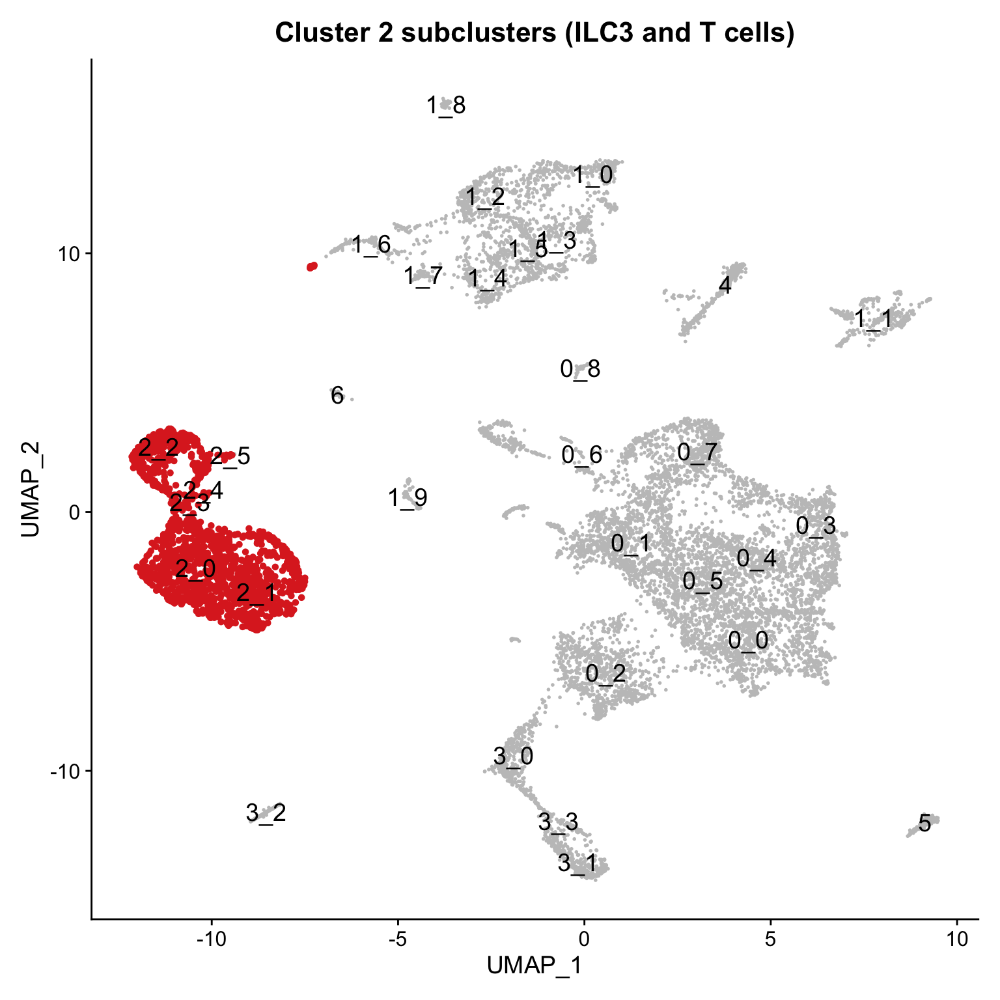
| Version | Author | Date |
|---|---|---|
| 18ac628 | Calandra Grima | 2026-08-04 |
As an alternative to using FindSubCluster() on the
existing integrated_snn graph, here we instead subset the
object to just the cells in Cluster 2, then recompute PCA, neighbours,
UMAP and clustering on this subset alone.
seu_int.sub2 <- seu_int.AmnioSC[, highlight_cells]
seu_int.sub2$seurat_clusters <- droplevels(factor(seu_int.sub2$seurat_clusters))
res_cols <- grep("^integrated_snn_res\\.", colnames(seu_int.sub2@meta.data))
seu_int.sub2@meta.data <- seu_int.sub2@meta.data[, -res_cols]
DefaultAssay(seu_int.sub2) <- "RNA"
table(seu_int.sub2$seurat_clusters)
2_0 2_1 2_2 2_3 2_4 2_5
583 455 280 178 107 19 seu_int.sub2 <- integrateDataset(seu_int.sub2, k.weight=45, npcs=45)Calculating cell attributes from input UMI matrix: log_umiVariance stabilizing transformation of count matrix of size 13604 by 149Model formula is y ~ log_umiGet Negative Binomial regression parameters per geneUsing 2000 genes, 149 cells | | | 0% | |================== | 25% | |=================================== | 50% | |==================================================== | 75% | |======================================================================| 100%Found 27 outliers - those will be ignored in fitting/regularization stepSecond step: Get residuals using fitted parameters for 13604 genes | | | 0% | |== | 4% | |===== | 7% | |======== | 11% | |========== | 14% | |============ | 18% | |=============== | 21% | |================== | 25% | |==================== | 29% | |====================== | 32% | |========================= | 36% | |============================ | 39% | |============================== | 43% | |================================ | 46% | |=================================== | 50% | |====================================== | 54% | |======================================== | 57% | |========================================== | 61% | |============================================= | 64% | |================================================ | 68% | |================================================== | 71% | |==================================================== | 75% | |======================================================= | 79% | |========================================================== | 82% | |============================================================ | 86% | |============================================================== | 89% | |================================================================= | 93% | |==================================================================== | 96% | |======================================================================| 100%Computing corrected count matrix for 13604 genes | | | 0% | |== | 4% | |===== | 7% | |======== | 11% | |========== | 14% | |============ | 18% | |=============== | 21% | |================== | 25% | |==================== | 29% | |====================== | 32% | |========================= | 36% | |============================ | 39% | |============================== | 43% | |================================ | 46% | |=================================== | 50% | |====================================== | 54% | |======================================== | 57% | |========================================== | 61% | |============================================= | 64% | |================================================ | 68% | |================================================== | 71% | |==================================================== | 75% | |======================================================= | 79% | |========================================================== | 82% | |============================================================ | 86% | |============================================================== | 89% | |================================================================= | 93% | |==================================================================== | 96% | |======================================================================| 100%Calculating gene attributesWall clock passed: Time difference of 1.630047 secsDetermine variable featuresPlace corrected count matrix in counts slotCentering data matrixSet default assay to SCTCalculating cell attributes from input UMI matrix: log_umiVariance stabilizing transformation of count matrix of size 8189 by 48Model formula is y ~ log_umiGet Negative Binomial regression parameters per geneUsing 2000 genes, 48 cells | | | 0% | |================== | 25% | |=================================== | 50% | |==================================================== | 75% | |======================================================================| 100%Found 47 outliers - those will be ignored in fitting/regularization stepSecond step: Get residuals using fitted parameters for 8189 genes | | | 0% | |==== | 6% | |======== | 12% | |============ | 18% | |================ | 24% | |===================== | 29% | |========================= | 35% | |============================= | 41% | |================================= | 47% | |===================================== | 53% | |========================================= | 59% | |============================================= | 65% | |================================================= | 71% | |====================================================== | 76% | |========================================================== | 82% | |============================================================== | 88% | |================================================================== | 94% | |======================================================================| 100%Computing corrected count matrix for 8189 genes | | | 0% | |==== | 6% | |======== | 12% | |============ | 18% | |================ | 24% | |===================== | 29% | |========================= | 35% | |============================= | 41% | |================================= | 47% | |===================================== | 53% | |========================================= | 59% | |============================================= | 65% | |================================================= | 71% | |====================================================== | 76% | |========================================================== | 82% | |============================================================== | 88% | |================================================================== | 94% | |======================================================================| 100%Calculating gene attributesWall clock passed: Time difference of 1.022372 secsDetermine variable featuresPlace corrected count matrix in counts slotCentering data matrixSet default assay to SCTCalculating cell attributes from input UMI matrix: log_umiVariance stabilizing transformation of count matrix of size 16048 by 461Model formula is y ~ log_umiGet Negative Binomial regression parameters per geneUsing 2000 genes, 461 cells | | | 0% | |================== | 25% | |=================================== | 50% | |==================================================== | 75% | |======================================================================| 100%Found 25 outliers - those will be ignored in fitting/regularization stepSecond step: Get residuals using fitted parameters for 16048 genes | | | 0% | |== | 3% | |==== | 6% | |====== | 9% | |======== | 12% | |=========== | 15% | |============= | 18% | |=============== | 21% | |================= | 24% | |=================== | 27% | |===================== | 30% | |======================= | 33% | |========================= | 36% | |============================ | 39% | |============================== | 42% | |================================ | 45% | |================================== | 48% | |==================================== | 52% | |====================================== | 55% | |======================================== | 58% | |========================================== | 61% | |============================================= | 64% | |=============================================== | 67% | |================================================= | 70% | |=================================================== | 73% | |===================================================== | 76% | |======================================================= | 79% | |========================================================= | 82% | |=========================================================== | 85% | |============================================================== | 88% | |================================================================ | 91% | |================================================================== | 94% | |==================================================================== | 97% | |======================================================================| 100%Computing corrected count matrix for 16048 genes | | | 0% | |== | 3% | |==== | 6% | |====== | 9% | |======== | 12% | |=========== | 15% | |============= | 18% | |=============== | 21% | |================= | 24% | |=================== | 27% | |===================== | 30% | |======================= | 33% | |========================= | 36% | |============================ | 39% | |============================== | 42% | |================================ | 45% | |================================== | 48% | |==================================== | 52% | |====================================== | 55% | |======================================== | 58% | |========================================== | 61% | |============================================= | 64% | |=============================================== | 67% | |================================================= | 70% | |=================================================== | 73% | |===================================================== | 76% | |======================================================= | 79% | |========================================================= | 82% | |=========================================================== | 85% | |============================================================== | 88% | |================================================================ | 91% | |================================================================== | 94% | |==================================================================== | 97% | |======================================================================| 100%Calculating gene attributesWall clock passed: Time difference of 1.718098 secsDetermine variable featuresPlace corrected count matrix in counts slotCentering data matrixSet default assay to SCTCalculating cell attributes from input UMI matrix: log_umiVariance stabilizing transformation of count matrix of size 16913 by 964Model formula is y ~ log_umiGet Negative Binomial regression parameters per geneUsing 2000 genes, 964 cells | | | 0% | |================== | 25% | |=================================== | 50% | |==================================================== | 75% | |======================================================================| 100%Found 72 outliers - those will be ignored in fitting/regularization stepSecond step: Get residuals using fitted parameters for 16913 genes | | | 0% | |== | 3% | |==== | 6% | |====== | 9% | |======== | 12% | |========== | 15% | |============ | 18% | |============== | 21% | |================ | 24% | |=================== | 26% | |===================== | 29% | |======================= | 32% | |========================= | 35% | |=========================== | 38% | |============================= | 41% | |=============================== | 44% | |================================= | 47% | |=================================== | 50% | |===================================== | 53% | |======================================= | 56% | |========================================= | 59% | |=========================================== | 62% | |============================================= | 65% | |=============================================== | 68% | |================================================= | 71% | |=================================================== | 74% | |====================================================== | 76% | |======================================================== | 79% | |========================================================== | 82% | |============================================================ | 85% | |============================================================== | 88% | |================================================================ | 91% | |================================================================== | 94% | |==================================================================== | 97% | |======================================================================| 100%Computing corrected count matrix for 16913 genes | | | 0% | |== | 3% | |==== | 6% | |====== | 9% | |======== | 12% | |========== | 15% | |============ | 18% | |============== | 21% | |================ | 24% | |=================== | 26% | |===================== | 29% | |======================= | 32% | |========================= | 35% | |=========================== | 38% | |============================= | 41% | |=============================== | 44% | |================================= | 47% | |=================================== | 50% | |===================================== | 53% | |======================================= | 56% | |========================================= | 59% | |=========================================== | 62% | |============================================= | 65% | |=============================================== | 68% | |================================================= | 71% | |=================================================== | 74% | |====================================================== | 76% | |======================================================== | 79% | |========================================================== | 82% | |============================================================ | 85% | |============================================================== | 88% | |================================================================ | 91% | |================================================================== | 94% | |==================================================================== | 97% | |======================================================================| 100%Calculating gene attributesWall clock passed: Time difference of 2.527328 secsDetermine variable featuresPlace corrected count matrix in counts slotCentering data matrixSet default assay to SCTPC_ 1
Positive: ATP8B4, MCTP2, STXBP5, SRGN, ATP10D, CHST11, CHN2, MIR4435-2HG, JAZF1, PRKCB
SLC24A3, ST8SIA4, RAPGEF2, TGFBR2, CYTOR, MAML3, RNF130, MMP25, PIK3CB, LYST
SGPP1, FLI1, DOCK5, TET2, NEK7, MAPK14, ARHGAP26, FOXO3, TMEM164, CAMK1D
Negative: LTB, FAM13A, EEF1A1, TMSB10, EEF1B2, RACK1, IL32, NME2, IFITM1, EEF1G
BCL2, UBA52, NACA, SERINC5, ENO1, GPHN, FAU, HSP90AB1, CD52, MIF
PLXNA4, TPT1, PRKCA, ACTG1, PCED1B-AS1, PLAC8, GAS5, NPM1, IFI44L, CD3G
PC_ 2
Positive: FYB1, PDE3B, FAM13A, PITPNC1, MLLT3, ARID5B, SERINC5, FUT8, CLEC2D, PRKCB
SATB1, EPB41, BACH2, ARHGAP25, VAV3, MT2A, FOXP1, NCK2, SHISAL2A, ITM2A
LRRN3, GIMAP7, NCOA3, USP3, SSH2, COTL1, NLRC5, MCUB, ITGAL, MTHFD1L
Negative: KLRB1, S100A4, LINC00299, AL589693.1, PLCB1, RORA, ADAM12, KIT, SCART1, EVA1C
IKZF2, MDFIC, ZBTB16, COLQ, CFH, CCR6, TRDC, NRIP1, LST1, DAB1
IL7R, CTSW, SOS1, TIAM1, IL23R, S100A6, EML4, PLD1, REEP3, LINC01524
PC_ 3
Positive: CAMK2D, PRKCH, CBLB, AOAH, CD2, ARAP2, PTPRJ, IKZF3, NKG7, RORA
CD96, GZMM, HCST, HLA-C, BCL11B, TRAC, HLA-B, GBP5, SKAP1, RABGAP1L
PTPRCAP-CORO1B, ARHGAP26, PARP8, ATP8A1, LINC-PINT, PYHIN1, TRG-AS1, NSF, APOBEC3G, SCML4
Negative: FRY, AC068587.4, GNAQ, AC079793.1, PHTF2, MAML3, FAM13A, MBOAT2, TRAT1, SCMH1
MAF, MAST4, TMEM131, SLC39A10, TBXAS1, TNFSF10, MAP3K1, CRPPA, SSBP2, MMP25
TBCA, HIST1H1D, SVIL, STX7, IFITM2, HPGD, CCDC88A, TUBA1B, SOCS2, ANXA1
PC_ 4
Positive: TUBA1B, STMN1, ATAD2, TUBB, DUT, SCMH1, MCM6, NSD2, HMGB2, LMNB1
MCM4, FANCI, BRIP1, PTMA, CRIP1, H2AFZ, RFC3, PCNA, ATAD5, HMGN2
DNAJC1, CENPP, EZH2, MMS22L, MCM3, LIG1, RBL1, AHI1, KNTC1, SMC2
Negative: LTB, AL589693.1, BCL2, PLXNA4, CDC14A, IL7R, LST1, ATF7IP2, PAG1, MAF
NEAT1, FRY, SLCO3A1, SATB1, PRKX, MAP3K1, S100A4, ADAM19, FOXO1, TMEM156
KAT2B, MLLT3, COLQ, NRROS, MED13L, CCR6, FNDC3B, VCL, DAB1, TXNIP
PC_ 5
Positive: MDFIC, ZBTB20, KLF12, MAML2, RAD51B, AC105402.3, SATB1, HIST1H1D, AC079793.1, ZEB1
AKT3, PCED1B, MAPRE2, RALGPS2, CBLB, SATB1-AS1, FP236383.3, AL592183.1, BCL11B, MBNL1
ERC1, RBMS1, TMEM200A, SERINC5, FAF1, AC016074.2, JMJD1C, RESF1, ZBTB44, CD96
Negative: SH3BGRL3, LY6E, S100A6, ACTG1, PFN1, S100A11, HLA-C, ACTB, HLA-B, EMP3
MYL6, PRKX, FTH1, CFL1, ANXA2, SRGN, IFITM1, FTL, TMSB10, HLA-A
ISG15, UBC, BST2, MXD1, NAMPT, TMSB4X, VASP, TXN, TPI1, MIR4435-2HG Warning in irlba(A = t(x = object), nv = npcs, ...): You're computing too large
a percentage of total singular values, use a standard svd instead.PC_ 1
Positive: RBMS1, RUNX2, ARL15, THEMIS, MGAT5, PRH1, LPP, MBNL1, PRKCH, PDSS2
SKAP1, TOX, PPP3CA, KLF12, TBCK, PACS1, LINC00299, UNC5C, PDE7A, EIF4G3
RORA, MBD5, RABGAP1L, FOXO1, SIK3, MED13L, TTC39C, AFF3, SIPA1L1, JMJD1C
Negative: TPT1, FAU, NACA, UBA52, EEF1A1, S100A4, CALM1, PTMA, TMSB4X, CD52
H3F3A, ATP5F1E, GAPDH, SERF2, FTL, EEF1B2, CFL1, FTH1, HSP90AB1, H3F3B
RACK1, VIM, IFITM1, EEF1G, LTB, ACTB, PFN1, TRDC, SNHG29, MYL6
PC_ 2
Positive: GRAP2, PHTF2, THEMIS, CA10, SKAP2, LINC02694, SPON1, MAF, BCL11B, AC013652.1
LINC01934, CHI3L2, FOXO1, TIAM1, BACH2, CD248, TC2N, NKG7, LINC-PINT, MYO1F
PDE1C, ATP5PD, TBL1X, DENND5A, ARL15, SBNO1, RORA-AS1, CCR6, RHOH, TMED8
Negative: ELOVL6, SYNE2, KCNQ5, PCDH9, BICC1, SORCS1, AC138305.1, LYN, MAML2, PHLPP1
ZFHX3, EYS, AL589693.1, PCED1B, AL136456.1, CLNK, DNER, IL2RB, IL1R1, SNTB1
BST2, GPHN, BTG1, SCMH1, NEO1, SRGN, QKI, DIP2C, RAPGEF5, TSPYL2
PC_ 3
Positive: IL7R, AC138305.1, CTNND2, PRICKLE1, LTB, SPRY1, TNRC6C, ZFP36L1, TNFAIP3, ITFG1
CDC14A, KIT, AFF3, PLXDC2, ZSWIM5, BICC1, AL137009.1, TRDC, DNER, HERC4
AKAP12, IMMP2L, ID2, MAP2K5, MPZL3, TGFBR1, ST8SIA4, ACTG1, LINC01871, IL23R
Negative: DCAF10, CBFB, PPP2R2A, PPM1L, C11orf80, FYB1, NREP, RBBP7, KIF20B, DHRS7B
PRDX6, MIR4435-2HG, DUT, PRKCE, RFC3, KRT19, SCAI, SPIDR, REPS1, C21orf58
RTN3, MTLN, ST7, IPO11, MZT2A, TBC1D13, KIF3B, ATP11C, PPP1R9A, MBOAT1
PC_ 4
Positive: LINC02694, ID2, MCPH1, MIR181A1HG, SORCS1, COMMD10, ALOX5AP, KCNQ5, RAP1GDS1, CD2
MATN2, MPHOSPH6, FYCO1, ADTRP, BST2, ITGAV, AC013652.1, PFN1, TRBC1, ATP10D
MAN1A1, LINC01871, COTL1, IL26, BTBD9, CLEC12A, TOX, ZNF609, INVS, EMSY
Negative: DPYD, IL32, JAKMIP2, DUSP1, CAB39L, SLC16A10, ANXA2, CRYL1, AC016074.2, H19
TRERF1, TRAT1, S100A11, PLA2G6, PDCD4, ITGAL, SSBP2, CCDC97, TESPA1, C6orf89
CRIP1, TECR, CPNE1, PPP3CB, DAB1, FYB1, CERS4, LYPLA1, KIF1B, MLXIP
PC_ 5
Positive: ABL1, NAALADL2, ZNF592, BAZ2B, UBE2O, ZRANB3, RNF149, LARP7, COMMD10, ZBTB8OS
PDZD2, ATF7IP2, ZBTB20, XRCC4, MCPH1, DMXL1, AL136456.1, AL589693.1, FAM185A, GRAMD1B
NEMF, ENY2, TRANK1, VPS26A, SEL1L, AC011476.3, PGM1, IGF2BP3, TANGO6, ANGPT2
Negative: SCLT1, PDK3, SIK2, PEAK1, KAT2B, LPP, ZEB1, NCAM1, GNAQ, BACH2
NKG7, SDAD1, KLF6, AGTPBP1, SOCS2, NIN, CNTRL, TGFBR3, DNAJC1, SOCS5
CYTH3, GNG2, TUBA1C, HDAC9, ANKRD28, PFN1, PCNT, PDE4B, NCALD, TSC22D1 PC_ 1
Positive: TMSB10, IL32, FYB1, UBA52, TRBC2, FAU, EEF1B2, EEF1A1, PTMA, HLA-B
SERINC5, ATP5F1E, TPT1, ARL4C, NME2, STK38, PLXNA4, PCED1B-AS1, SATB1, PDE3B
AIF1, GIMAP7, IFITM2, ITGA6, NACA, RACK1, PVT1, MLLT3, NEAT1, PRKCB
Negative: UNC5C, CA10, AFF3, MAN1A1, HDAC9, TOX, KIT, ADAM12, AC097518.2, CTNND2
PLCB1, SORCS1, LINC00299, IKZF2, CLEC12A, MCF2L2, IL23R, PTPN22, PPP3CA, PHACTR2
HIP1, ITGAE, ENPP1, LPAR1, MDFIC, RUNX2, MYO1D, PLD1, MGAT5, CD69
PC_ 2
Positive: ACTB, S100A4, KLRB1, GAPDH, LINC01871, NACA, TMSB4X, PTMA, S100A6, CALM1
FAU, ACTG1, PFN1, IFITM1, CFL1, H3F3A, SERF2, ATP5F1E, CD52, JUN
EEF1A1, LTB, SH3BGRL3, RACK1, UBA52, TEX14, MIF, VIM, MYL6, FOSB
Negative: DPYD, BCL2, MBNL1, MLLT3, PITPNC1, FOXP1, BACH2, MAML2, AOAH, SERINC5
AC079793.1, ZBTB20, PRKCA, CASK, PRKCB, ARHGAP15, PDE3B, CBLB, PAG1, CHST11
FUT8, RHOH, SATB1, ZFAND3, IMMP2L, RUNX1, TCF12, EXOC4, FARS2, ITK
PC_ 3
Positive: AL589693.1, SCART1, ADAM19, FRY, KAT2B, DAB1, AHNAK, S100A4, KLRB1, MYO1F
NCAPG2, S100A6, PHTF2, SOS1, VCL, ATAD2, CEP112, CCR6, AUTS2, CDH4
CRIP1, FP236383.3, SLAMF1, TUBA1B, STMN1, TUBB, TECR, RUNX1, LINC01572, EZH2
Negative: MAML2, AOAH, BTG1, FYB1, ATP8B4, RASA2, TCF7, LRRN3, XAF1, RUNX3
JUN, FOSB, LDLRAD4, BACH2, SORCS1, MLLT3, CD2, ID2, ADAMTS17, AFF3
GPR82, NCAM1, CLNK, TRBC1, PITPNC1, TOX, CASK, ST6GALNAC3, ALOX5AP, AC079793.1
PC_ 4
Positive: KCNQ5, COL23A1, AL136456.1, ATP8B4, EYS, PPP1R9A, PDZD2, LINC00299, SORCS1, FHIT
TOX2, BCAS1, LYN, ITGB1, BICC1, CLNK, IL1R1, TUBA1B, PCDH9, DNER
SLC37A1, CFH, ATAD2, ERVMER61-1, MAML2, ARHGAP6, HMGN2, C21orf58, ANP32E, ELOVL6
Negative: CA10, THEMIS, BCL11B, CD69, JAKMIP2, PHTF2, ITGAE, FOSB, KAT2B, STAT4
MAGI3, JUN, LINC-PINT, LTB, BCL2, PTPN22, ARHGAP25, KLRB1, ADAM19, GRAP2
MBNL1, CCR6, TRBC1, DDIT4, LINC01871, SCML4, ARL15, FOS, LINC02694, TC2N
PC_ 5
Positive: IL7R, TOX2, LTB, SCART1, AHNAK, BCAS1, IL1R1, COL23A1, AL589693.1, CFH
AL136456.1, LINC00299, EYS, LST1, JAML, DNER, GPR183, CDH4, S100A6, CCR6
ITGB1, MYO1F, TTC39C-AS1, APLP2, PCDH9, S100A4, PDZD2, PHYKPL, FP236383.3, PPP1R9A
Negative: JUN, SMC4, STMN1, FOSB, LINC01572, EZH2, ATAD2, HMGB2, TUBA1B, TACC3
THEMIS, CENPM, HIST1H4C, H2AFZ, NCAPD3, FANCI, TMPO, NSD2, DLEU2, NCAPG2
TUBB, PBX3, C21orf58, BRIP1, LINC02694, TUBB4B, HMGN2, MMS22L, WWOX, WDR76 PC_ 1
Positive: TMSB10, IL32, PTMA, FOS, NACA, TMSB4X, UBA52, IFITM1, EEF1A1, FAU
EEF1B2, TPT1, RACK1, ATP5F1E, IFITM2, FTL, AIF1, FOSB, H3F3A, FYB1
S100A4, PFN1, SH3BGRL3, PDE3B, NME2, FTH1, EMP3, HLA-B, ACTG1, SERF2
Negative: SORCS1, LINC00299, ADAM12, AFF3, UNC5C, ST6GALNAC3, AC097518.2, KIT, CA10, HDAC9
KCNQ5, CTNND2, PHACTR2, TOX, EYS, AL589693.1, COL23A1, PLXDC2, MCF2L2, MAN1A1
MYO1D, BICC1, MGAT5, IKZF2, RUNX2, LPAR1, ENPP1, PCAT1, FYCO1, RASA2
PC_ 2
Positive: KLRB1, CD69, TMSB4X, S100A4, LTB, CD52, TEX14, LINC01871, ACTB, TRBC1
H3F3B, CALM1, LINC00910, S100A6, SORCS1, KIT, GAPDH, JUN, CTNND2, FTL
SERF2, NACA, CA10, ID2, CFL1, PLXDC2, SOD1, CLEC12A, IL23R, PTPRCAP-CORO1B
Negative: PDE3B, AOAH, SERINC5, PITPNC1, NEAT1, CASK, FYB1, PRKCB, MAML2, ARID5B
ARAP2, LINC01619, MLLT3, EPB41, MBNL1, CBLB, DPYD, ARHGAP26, CD247, PRKCA
IGF2BP3, FOXP1, PAG1, FCHSD2, CLEC2D, ADD3, MED13L, ARHGEF18, IL6ST, CAMK1D
PC_ 3
Positive: KCNQ5, LINC00299, ATP8B4, EYS, PCDH9, AL136456.1, MAML2, DST, COL23A1, SORCS1
AL589693.1, PPP1R9A, CLNK, SRGAP3, PDZD2, FHIT, ELOVL6, ARHGAP6, BICC1, TOX2
LYN, ADAM12, IL1R1, AKT3, LNX1, GSN, PHYKPL, GRAMD1B, IGF2BP2, STK3
Negative: CA10, THEMIS, LINC02694, RORA, BCL11B, MGAT5, CD69, EML4, KLRB1, AC013652.1
RUNX1, GRAP2, PHTF2, ITGAE, BCL2, PDE4D, PDE1C, LINC-PINT, ARL15, JAKMIP2
ATP2B1, SCML4, MAN1A1, CCR6, ADGRE5, SKAP1, CD3G, RORA-AS1, CXCR6, RBMS1
PC_ 4
Positive: AL589693.1, IL32, PDE3B, KCNQ5, CD247, SERINC5, TMSB10, SOS1, BCL2, SORCS1
LINC00299, SMYD3, SYNE2, IFITM1, IKZF2, FHIT, EYS, GPHN, TOX, PRKCA
EEF1A1, ZBTB16, ARHGAP15, MLLT3, COL23A1, SNTB1, AOAH, SATB1, FYB1, MDFIC
Negative: KIF2A, BIRC3, UGCG, SAMSN1, LYST, ETV3, CERS6, NEAT1, GRK3, MBNL1
VOPP1, BMP2K, ETV6, N4BP2L1, REL, RFTN1, CCDC88A, NET1, PLEKHG1, FOXO1
FCHSD2, ROBO1, MAP3K13, EPSTI1, CPEB2, VPS8, ABCC4, KDM2B, RUFY3, MAP3K14
PC_ 5
Positive: AL589693.1, LTB, PLXDC2, SCART1, SAMD12, FAM241A, IL7R, BCL2, P2RY8, DAB1
MDFIC, TC2N, LST1, SOS1, TIAM1, EFCAB8, RUNX1, AL136456.1, PAG1, TANC1
PTPN13, AUTS2, ROBO1, AHNAK, VCL, ADAM19, NRIP1, ARHGAP10, KAT2B, DIP2C
Negative: ATP8B4, AOAH, ITGA1, LINC02694, NCAM1, MCTP2, PYHIN1, JUN, ATP10A, SORCS1
NKG7, SRGN, MARCH3, KLRF2, CHN2, SKAP2, MAN1A1, PITPNC1, SFMBT2, ALOX5AP
PRKCH, ADAMTS17, TRDC, HOPX, PARP8, CMC1, SUPT3H, AC013652.1, SRGAP3, GSTP1 Computing within dataset neighborhoodsFinding all pairwise anchorsProjecting new data onto SVD
Projecting new data onto SVDFinding neighborhoodsFinding anchors Found 614 anchorsProjecting new data onto SVD
Projecting new data onto SVDFinding neighborhoodsFinding anchors Found 1438 anchorsProjecting new data onto SVD
Projecting new data onto SVDFinding neighborhoodsFinding anchors Found 643 anchorsProjecting new data onto SVD
Projecting new data onto SVDFinding neighborhoodsFinding anchors Found 1378 anchorsProjecting new data onto SVD
Projecting new data onto SVDFinding neighborhoodsFinding anchors Found 670 anchorsProjecting new data onto SVD
Projecting new data onto SVDFinding neighborhoodsFinding anchors Found 3321 anchorsMerging dataset 2 into 4Extracting anchors for merged samplesFinding integration vectorsFinding integration vector weightsIntegrating dataMerging dataset 1 into 3Extracting anchors for merged samplesFinding integration vectorsFinding integration vector weightsIntegrating dataMerging dataset 3 1 into 4 2Extracting anchors for merged samplesFinding integration vectorsFinding integration vector weightsIntegrating dataWarning: The default method for RunUMAP has changed from calling Python UMAP via reticulate to the R-native UWOT using the cosine metric
To use Python UMAP via reticulate, set umap.method to 'umap-learn' and metric to 'correlation'
This message will be shown once per sessionElbowPlot(seu_int.sub2, ndims = 30)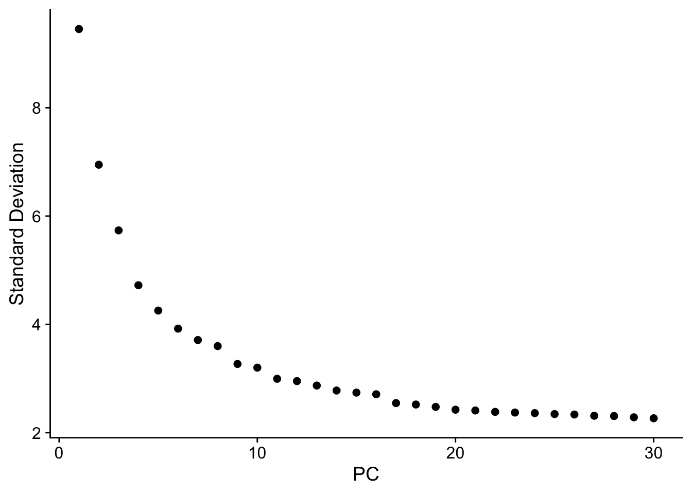
| Version | Author | Date |
|---|---|---|
| 18ac628 | Calandra Grima | 2026-08-04 |
seu_int.sub2 <- FindNeighbors(seu_int.sub2, reduction = "pca", dims = 1:30)Computing nearest neighbor graphComputing SNNseu_int.sub2 <- RunUMAP(seu_int.sub2, dims = 1:30)15:03:49 UMAP embedding parameters a = 0.9922 b = 1.11215:03:49 Read 1622 rows and found 30 numeric columns15:03:49 Using Annoy for neighbor search, n_neighbors = 3015:03:49 Building Annoy index with metric = cosine, n_trees = 500% 10 20 30 40 50 60 70 80 90 100%[----|----|----|----|----|----|----|----|----|----|**************************************************|
15:03:50 Writing NN index file to temp file /var/folders/_p/fb4qrd817bl9zrt6rr1p395x_ssckz/T//RtmphY7SbH/file6ad02e1df74b
15:03:50 Searching Annoy index using 1 thread, search_k = 3000
15:03:50 Annoy recall = 100%
15:03:50 Commencing smooth kNN distance calibration using 1 thread with target n_neighbors = 30
15:03:51 Initializing from normalized Laplacian + noise (using RSpectra)
15:03:51 Commencing optimization for 500 epochs, with 65388 positive edges
15:03:51 Using rng type: pcg
15:03:52 Optimization finishedseu_int.sub2 <- FindClusters(seu_int.sub2, algorithm = 3,
resolution = seq(0.1, 1, by = 0.1))Modularity Optimizer version 1.3.0 by Ludo Waltman and Nees Jan van Eck
Number of nodes: 1622
Number of edges: 88402
Running smart local moving algorithm...
Maximum modularity in 10 random starts: 0.9146
Number of communities: 3
Elapsed time: 0 seconds
Modularity Optimizer version 1.3.0 by Ludo Waltman and Nees Jan van Eck
Number of nodes: 1622
Number of edges: 88402
Running smart local moving algorithm...
Maximum modularity in 10 random starts: 0.8520
Number of communities: 5
Elapsed time: 0 seconds
Modularity Optimizer version 1.3.0 by Ludo Waltman and Nees Jan van Eck
Number of nodes: 1622
Number of edges: 88402
Running smart local moving algorithm...
Maximum modularity in 10 random starts: 0.8124
Number of communities: 7
Elapsed time: 0 seconds
Modularity Optimizer version 1.3.0 by Ludo Waltman and Nees Jan van Eck
Number of nodes: 1622
Number of edges: 88402
Running smart local moving algorithm...
Maximum modularity in 10 random starts: 0.7853
Number of communities: 8
Elapsed time: 0 seconds
Modularity Optimizer version 1.3.0 by Ludo Waltman and Nees Jan van Eck
Number of nodes: 1622
Number of edges: 88402
Running smart local moving algorithm...
Maximum modularity in 10 random starts: 0.7606
Number of communities: 9
Elapsed time: 0 seconds
Modularity Optimizer version 1.3.0 by Ludo Waltman and Nees Jan van Eck
Number of nodes: 1622
Number of edges: 88402
Running smart local moving algorithm...
Maximum modularity in 10 random starts: 0.7436
Number of communities: 12
Elapsed time: 0 seconds
Modularity Optimizer version 1.3.0 by Ludo Waltman and Nees Jan van Eck
Number of nodes: 1622
Number of edges: 88402
Running smart local moving algorithm...
Maximum modularity in 10 random starts: 0.7291
Number of communities: 12
Elapsed time: 0 seconds
Modularity Optimizer version 1.3.0 by Ludo Waltman and Nees Jan van Eck
Number of nodes: 1622
Number of edges: 88402
Running smart local moving algorithm...
Maximum modularity in 10 random starts: 0.7147
Number of communities: 12
Elapsed time: 0 seconds
Modularity Optimizer version 1.3.0 by Ludo Waltman and Nees Jan van Eck
Number of nodes: 1622
Number of edges: 88402
Running smart local moving algorithm...
Maximum modularity in 10 random starts: 0.7007
Number of communities: 13
Elapsed time: 0 seconds
Modularity Optimizer version 1.3.0 by Ludo Waltman and Nees Jan van Eck
Number of nodes: 1622
Number of edges: 88402
Running smart local moving algorithm...
Maximum modularity in 10 random starts: 0.6876
Number of communities: 13
Elapsed time: 0 secondsclustree(seu_int.sub2, prefix = "integrated_snn_res.")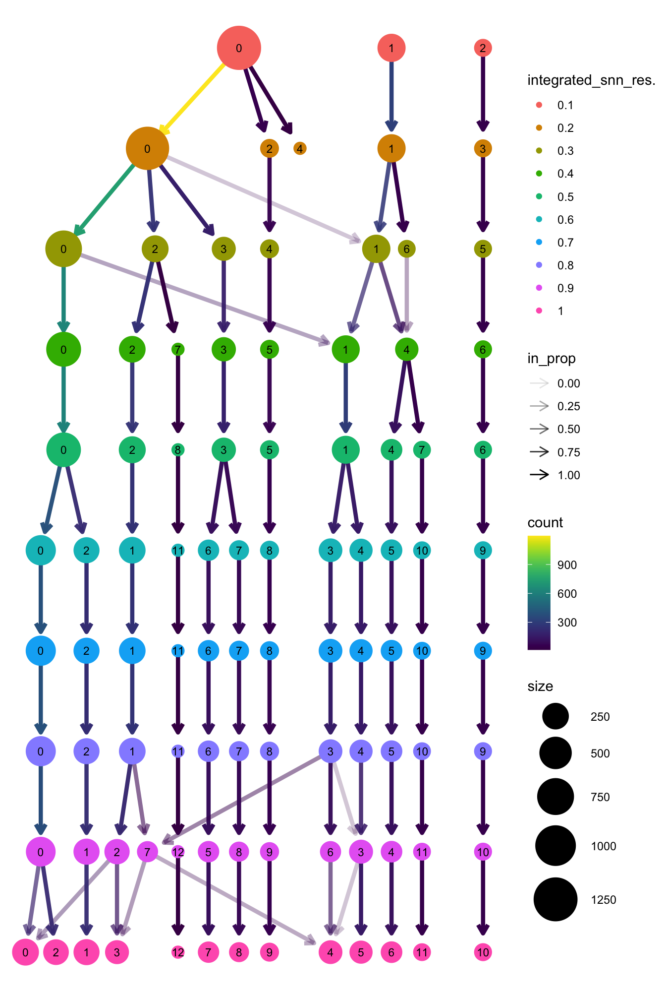
| Version | Author | Date |
|---|---|---|
| 18ac628 | Calandra Grima | 2026-08-04 |
DimPlot(seu_int.sub2, reduction = 'umap', label = TRUE, label.size = 5,
group.by = "integrated_snn_res.0.1") +
guides(color = guide_legend(ncol = 11, override.aes = list(size = 2))) +
bottom_legend +
ggtitle("Subclusters of Cluster 2 (resolution = 0.1)")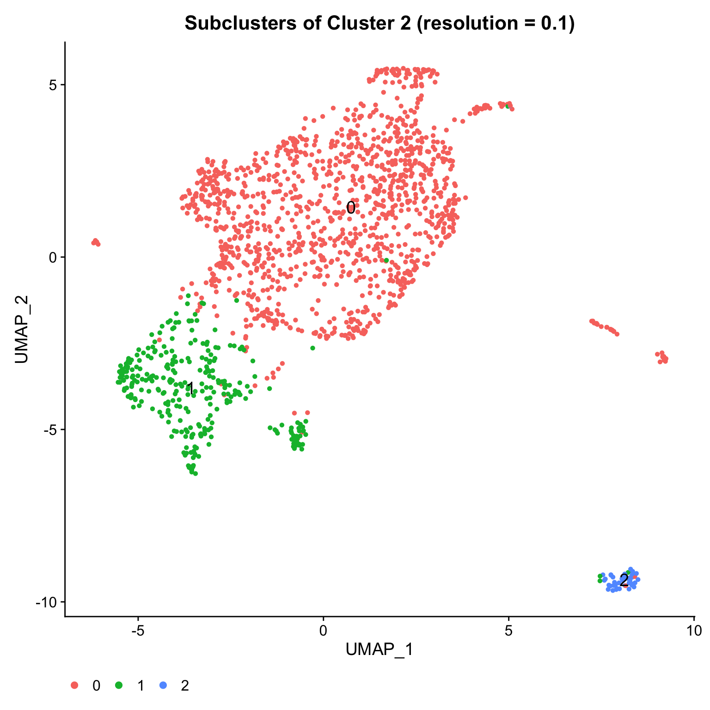
| Version | Author | Date |
|---|---|---|
| 18ac628 | Calandra Grima | 2026-08-04 |
DimPlot(seu_int.sub2, reduction = 'umap', label = TRUE, label.size = 5,
group.by = "integrated_snn_res.0.2") +
guides(color = guide_legend(ncol = 11, override.aes = list(size = 2))) +
bottom_legend +
ggtitle("Subclusters of Cluster 2 (resolution = 0.2)")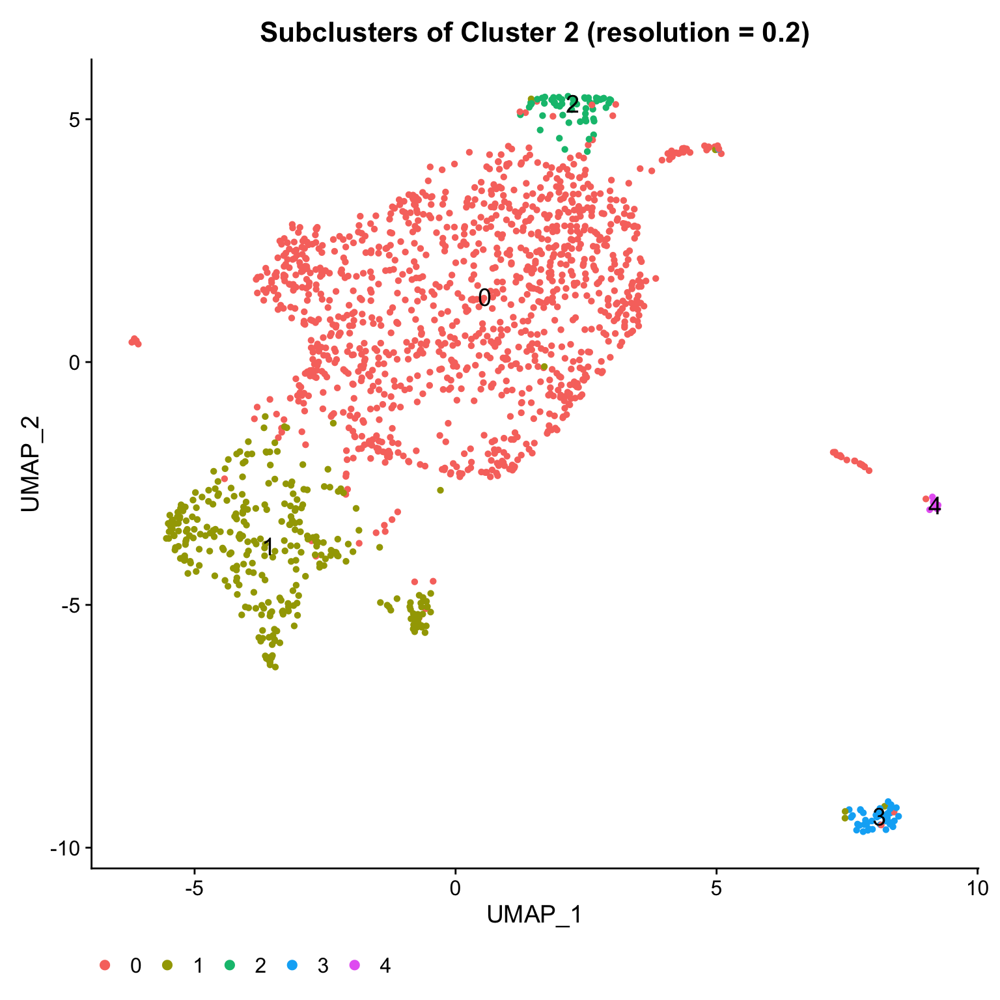
| Version | Author | Date |
|---|---|---|
| 18ac628 | Calandra Grima | 2026-08-04 |
DimPlot(seu_int.sub2, reduction = 'umap', label = TRUE, label.size = 5,
group.by = "integrated_snn_res.0.3") +
guides(color = guide_legend(ncol = 11, override.aes = list(size = 2))) +
bottom_legend +
ggtitle("Subclusters of Cluster 2 (resolution = 0.3)")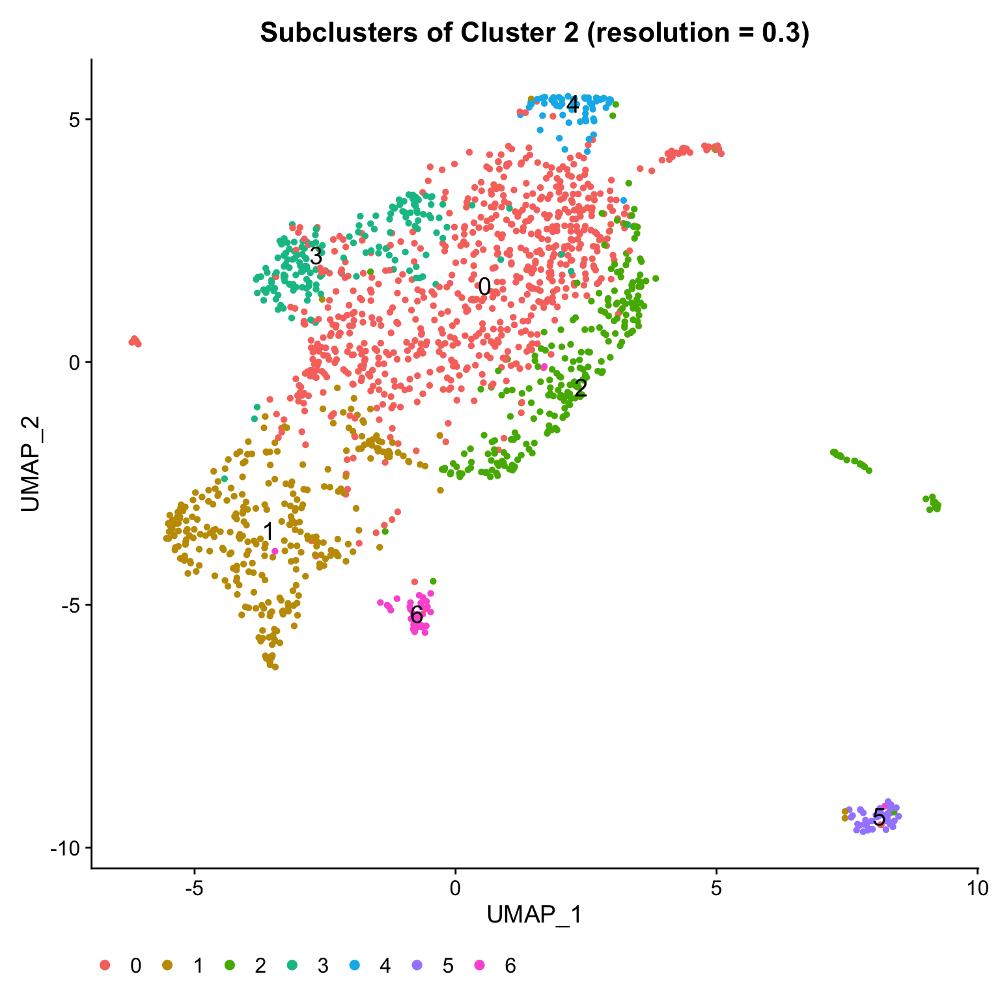
| Version | Author | Date |
|---|---|---|
| 18ac628 | Calandra Grima | 2026-08-04 |
DimPlot(seu_int.sub2, reduction = 'umap', label = TRUE, label.size = 5,
group.by = "integrated_snn_res.0.4") +
guides(color = guide_legend(ncol = 11, override.aes = list(size = 2))) +
bottom_legend +
ggtitle("Subclusters of Cluster 2 (resolution = 0.4)")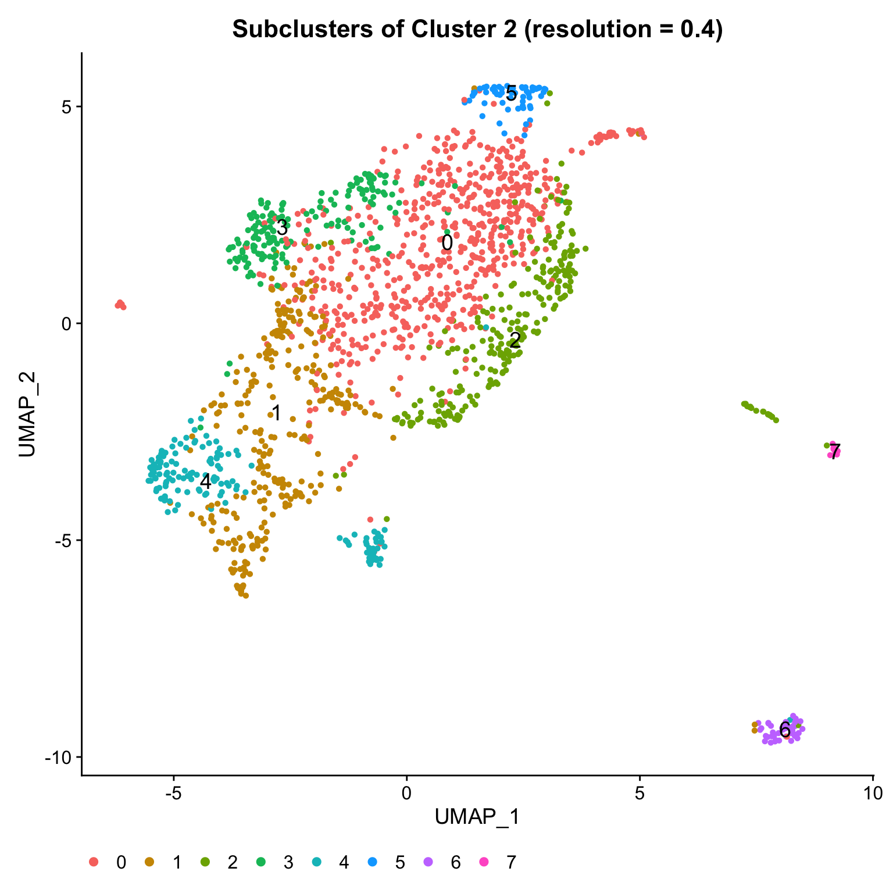
| Version | Author | Date |
|---|---|---|
| 18ac628 | Calandra Grima | 2026-08-04 |
DimPlot(seu_int.sub2, reduction = 'umap', label = TRUE, label.size = 5,
group.by = "integrated_snn_res.0.5") +
guides(color = guide_legend(ncol = 11, override.aes = list(size = 2))) +
bottom_legend +
ggtitle("Subclusters of Cluster 2 (resolution = 0.5)")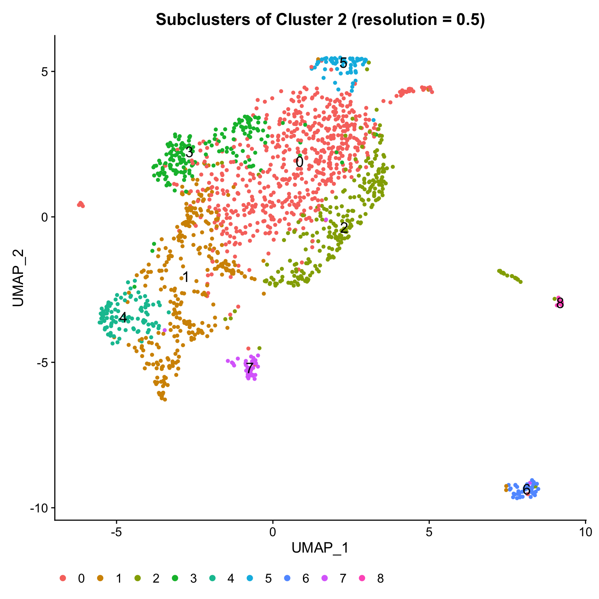
| Version | Author | Date |
|---|---|---|
| 18ac628 | Calandra Grima | 2026-08-04 |
DimPlot(seu_int.sub2, reduction = 'umap', label = TRUE, label.size = 5,
group.by = "integrated_snn_res.0.6") +
guides(color = guide_legend(ncol = 11, override.aes = list(size = 2))) +
bottom_legend +
ggtitle("Subclusters of Cluster 2 (resolution = 0.6)")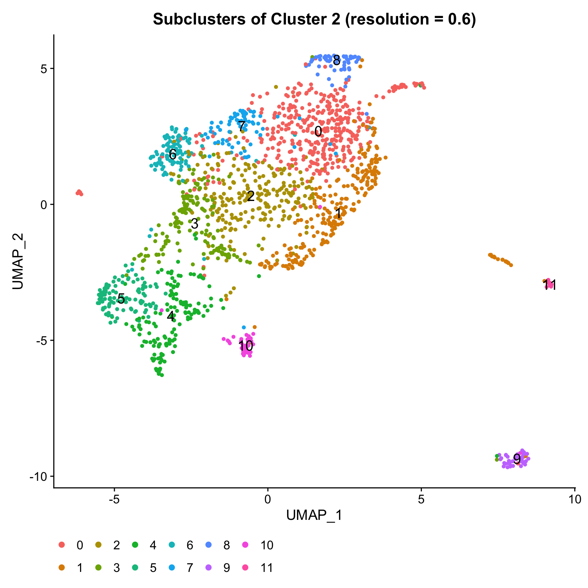
| Version | Author | Date |
|---|---|---|
| 18ac628 | Calandra Grima | 2026-08-04 |
DimPlot(seu_int.sub2, reduction = 'umap', label = TRUE, label.size = 5,
group.by = "integrated_snn_res.1") +
guides(color = guide_legend(ncol = 11, override.aes = list(size = 2))) +
bottom_legend +
ggtitle("Subclusters of Cluster 2 (resolution = 1)")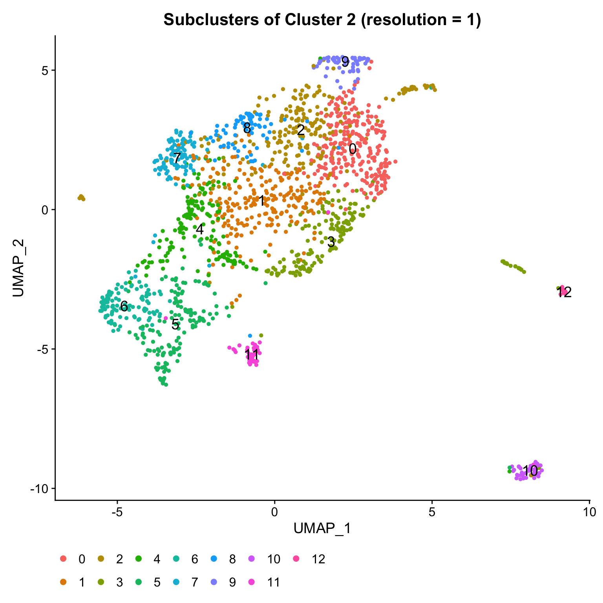
| Version | Author | Date |
|---|---|---|
| 18ac628 | Calandra Grima | 2026-08-04 |
We will go with resolution = 0.6 for downstream analysis.
seu_int.sub2$seurat_clusters <- seu_int.sub2$integrated_snn_res.0.6
Idents(seu_int.sub2) <- seu_int.sub2$seurat_clustersSUBSET_CLUSTER_COLOURS <- light.colors(n = nlevels(seu_int.sub2$seurat_clusters))
names(SUBSET_CLUSTER_COLOURS) <- levels(seu_int.sub2$seurat_clusters)DimPlot(seu_int.sub2, reduction = 'umap', label = TRUE, label.size = 5,
group.by = "seurat_clusters") +
scale_colour_manual(values = SUBSET_CLUSTER_COLOURS) +
guides(color = guide_legend(ncol = 11, override.aes = list(size = 2))) +
bottom_legend +
ggtitle("Subclusters of Cluster 2 (recomputed)")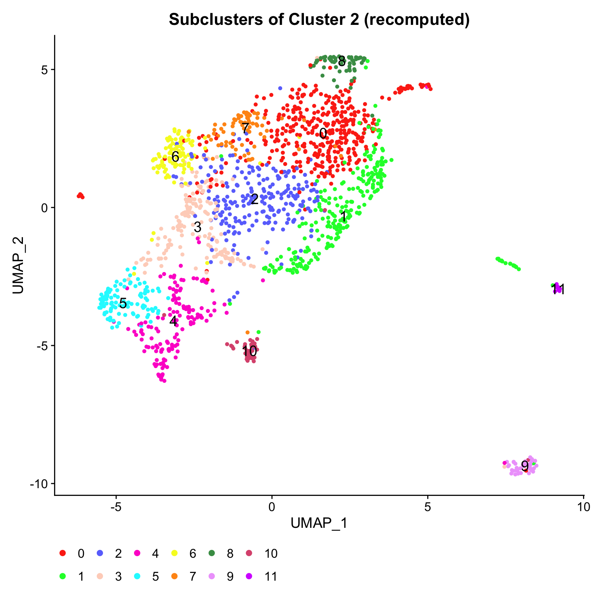
| Version | Author | Date |
|---|---|---|
| 18ac628 | Calandra Grima | 2026-08-04 |
DimPlot(seu_int.sub2, reduction = 'umap', label = FALSE, label.size = 5,
group.by = "Donor") +
guides(color = guide_legend(nrow = 2, override.aes = list(size = 2))) +
bottom_legend +
ggtitle("Subclusters of Cluster 2 (recomputed)")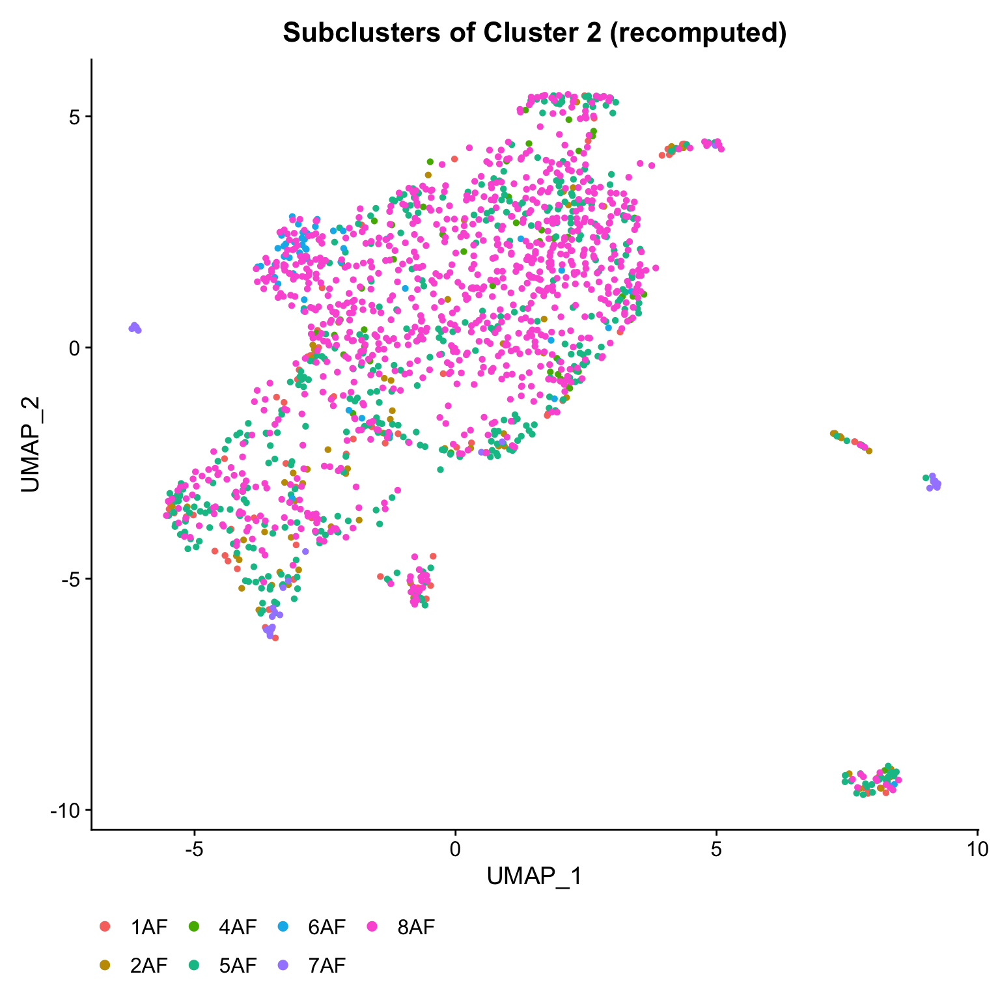
| Version | Author | Date |
|---|---|---|
| 18ac628 | Calandra Grima | 2026-08-04 |
table(seu_int.sub2$seurat_clusters)
0 1 2 3 4 5 6 7 8 9 10 11
395 250 229 159 144 108 102 76 59 44 42 14 We will use the same limma one-vs-rest marker gene approach used in the Cluster marker gene and GO analysis workflow, this time using the clusters found by subsetting and recomputing PCA/UMAP/clustering on just Cluster 2 cells.
counts <- as.matrix(seu_int.sub2[["RNA"]]@counts)
sample <- seu_int.sub2$Sample
subclusters <- seu_int.sub2$seurat_clusters
fit.cont <- findMarkerGenes(counts, subclusters, sample)
summary(decideTests(fit.cont)) 0 1 2 3 4 5 6 7 8 9 10 11
Down 503 512 286 235 227 198 118 101 98 60 56 243
NotSig 35612 35576 35949 35918 35654 35323 35918 35928 35532 35179 35717 35389
Up 155 182 35 117 389 749 234 241 640 1031 497 638# picks genes above given logFC threshold
treat.all <- treat(fit.cont, lfc = 0.5)
dt <- decideTests(treat.all)
summary(dt) 0 1 2 3 4 5 6 7 8 9 10 11
Down 6 78 2 10 18 28 0 1 13 0 11 35
NotSig 36244 36173 36262 36211 36206 36149 36239 36237 36185 36046 36202 36009
Up 20 19 6 49 46 93 31 32 72 224 57 226subcluster_names <- levels(subclusters)
subcluster_markers_top10 <- extractMarkerGenes(treat.all, subcluster_names)
subcluster_markers_top20 <- extractMarkerGenes(treat.all, subcluster_names,
n_markers = 20)
subcluster_markers_top50 <- extractMarkerGenes(treat.all, subcluster_names,
n_markers = 50)
paged_table(as.data.frame(subcluster_markers_top10))saveRDS(subcluster_markers_top10,
here("data", "workflow", "AmnioSC.cluster02_subset_subcluster_markers_top10.rds"))
write.csv(subcluster_markers_top10,
file = here("data", "workflow", "AmnioSC.cluster02_subset_subcluster_markers_top10.csv"),
quote = FALSE)
write.csv(subcluster_markers_top20,
file = here("data", "workflow", "AmnioSC.cluster02_subset_subcluster_markers_top20.csv"),
quote = FALSE)annotation_df <- data.frame(clusters = seu_int.sub2$seurat_clusters,
cell = colnames(seu_int.sub2),
Donor = seu_int.sub2$Donor)
annotation_df <- annotation_df[order(annotation_df$clusters),]
annotation_colours <- list(clusters = SUBSET_CLUSTER_COLOURS[levels(subclusters)])
cluster_markers_seu <- seu_int.sub2[unique(unname(unlist(subcluster_markers_top10))), annotation_df$cell]pheatmap(GetAssayData(cluster_markers_seu, "data"), show_colnames = FALSE,
color = viridis(14), annotation_col = annotation_df[, "clusters", drop = FALSE],
annotation_colors = annotation_colours["clusters"],
cluster_cols = FALSE, cluster_rows = TRUE,
gaps_col = cumsum(table(cluster_markers_seu$seurat_clusters)))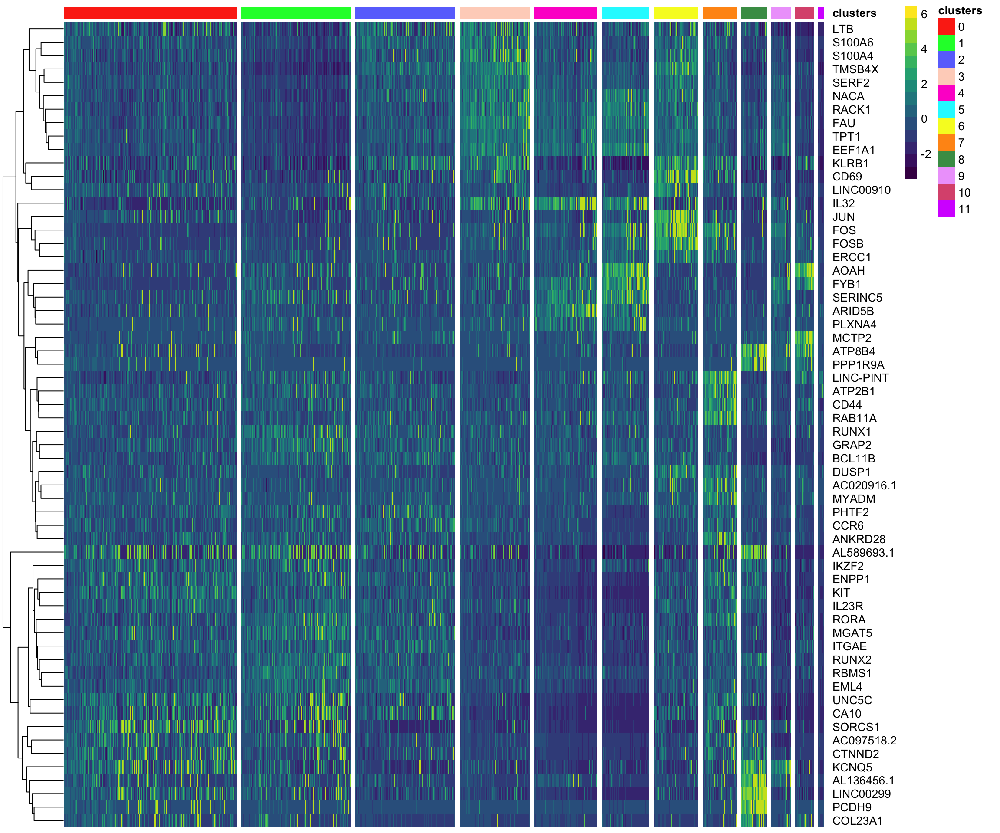
| Version | Author | Date |
|---|---|---|
| 18ac628 | Calandra Grima | 2026-08-04 |
DotPlot(object = seu_int.sub2, features = unique(unlist(subcluster_markers_top10)),
group.by = "seurat_clusters", assay = "SCT") +
theme_bw() + rotate_x_labels +
ggtitle("Expression of subcluster marker genes - top 10 per cluster - Subclustering analysis")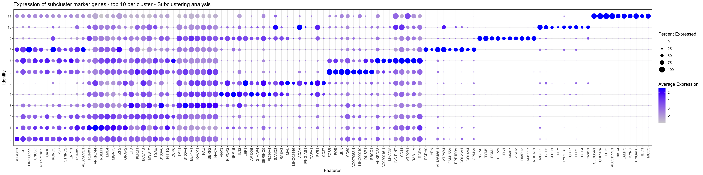
| Version | Author | Date |
|---|---|---|
| 18ac628 | Calandra Grima | 2026-08-04 |
DotPlot(object = seu_int.sub2, features = unique(unlist(subcluster_markers_top20)),
group.by = "seurat_clusters", assay = "SCT") +
theme_bw() + rotate_x_labels +
ggtitle("Expression of subcluster marker - top 20 per cluster - Subclustering analysis")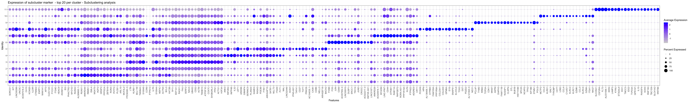
| Version | Author | Date |
|---|---|---|
| 18ac628 | Calandra Grima | 2026-08-04 |
subcluster_go <- performGO(subcluster_markers_top50, subcluster_names)'select()' returned 1:1 mapping between keys and columns
'select()' returned 1:1 mapping between keys and columns
'select()' returned 1:1 mapping between keys and columns
'select()' returned 1:1 mapping between keys and columns
'select()' returned 1:1 mapping between keys and columns
'select()' returned 1:1 mapping between keys and columns
'select()' returned 1:1 mapping between keys and columns
'select()' returned 1:1 mapping between keys and columns
'select()' returned 1:1 mapping between keys and columns
'select()' returned 1:1 mapping between keys and columns
'select()' returned 1:1 mapping between keys and columns
'select()' returned 1:1 mapping between keys and columnssubcluster_go <- as.data.frame(subcluster_go)
write.table(subcluster_go, sep = "\t", row.names = FALSE,
file = here("data", "workflow", "AmnioSC.cluster02_subset_subcluster_go_top10.tsv"),
quote = FALSE)paged_table(subcluster_go)# map the sub78 (subset & recomputed) subclusters back onto the full dataset, leaving every
# other cell labelled by its refined cluster so it can be greyed out below
seu_int.AmnioSC$sub2_cluster <- as.character(seu_int.AmnioSC$seurat_clusters)
seu_int.AmnioSC$sub2_cluster[colnames(seu_int.sub2)] <- paste0("Sub2_", seu_int.sub2$seurat_clusters)
seu_int.AmnioSC$sub2_cluster <- factor(seu_int.AmnioSC$sub2_cluster)# colour only the sub78 subclusters brightly, grey out everything else
sub2_levels <- levels(seu_int.AmnioSC$sub2_cluster)
sub2_target_clusters <- grep("^Sub2_", sub2_levels, value = TRUE)
SUB2_FULL_COLOURS <- rep("grey80", length(sub2_levels))
names(SUB2_FULL_COLOURS) <- sub2_levels
SUB2_FULL_COLOURS[sub2_target_clusters] <- light.colors(n = length(sub2_target_clusters))DimPlot(seu_int.AmnioSC, reduction = 'umap', label = TRUE, label.size = 5,
group.by = "sub2_cluster") +
scale_colour_manual(values = SUB2_FULL_COLOURS) +
guides(color = guide_legend(ncol = 11, override.aes = list(size = 2))) +
bottom_legend +
ggtitle("Cluster 2 subclusters (recomputed) in the full dataset")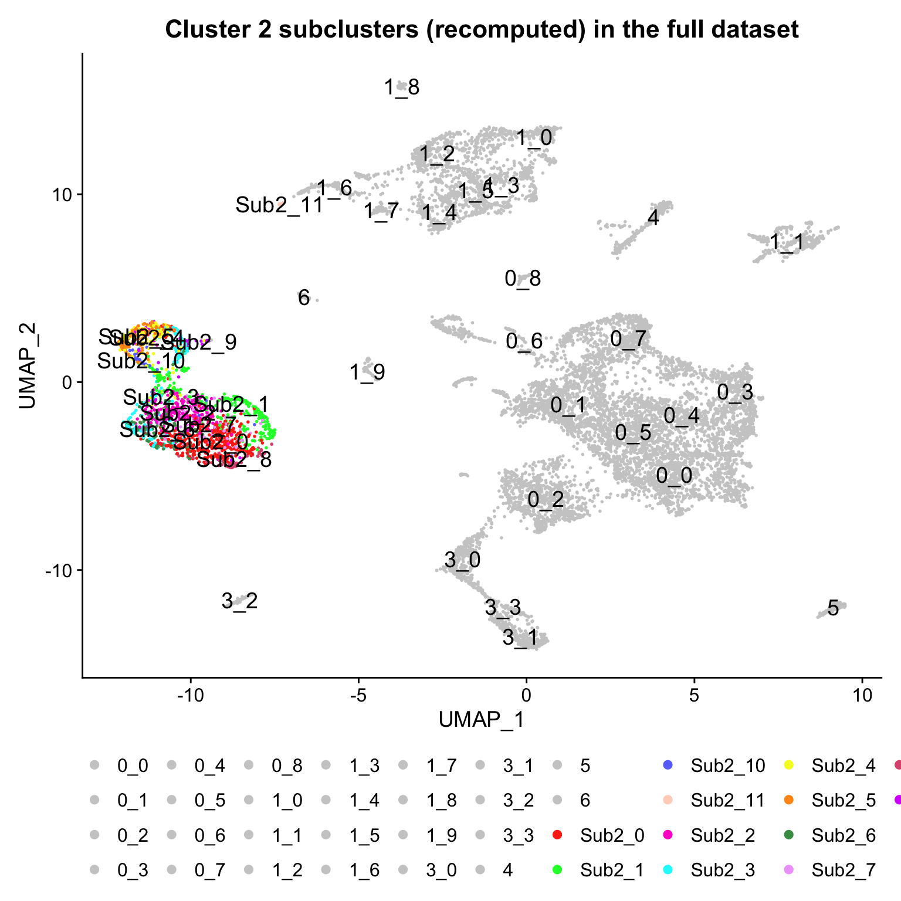
| Version | Author | Date |
|---|---|---|
| 18ac628 | Calandra Grima | 2026-08-04 |
DefaultAssay(seu_int.AmnioSC) <- "SCT"
FeaturePlot(seu_int.AmnioSC, features = c("FOXP3","TIGIT"), reduction = "umap")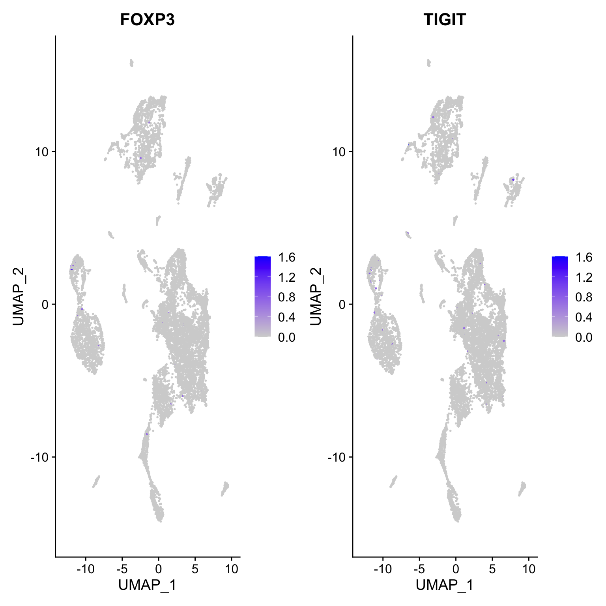
| Version | Author | Date |
|---|---|---|
| 18ac628 | Calandra Grima | 2026-08-04 |
FeaturePlot(seu_int.AmnioSC, features = c("CD4","CD8A"), reduction = "umap")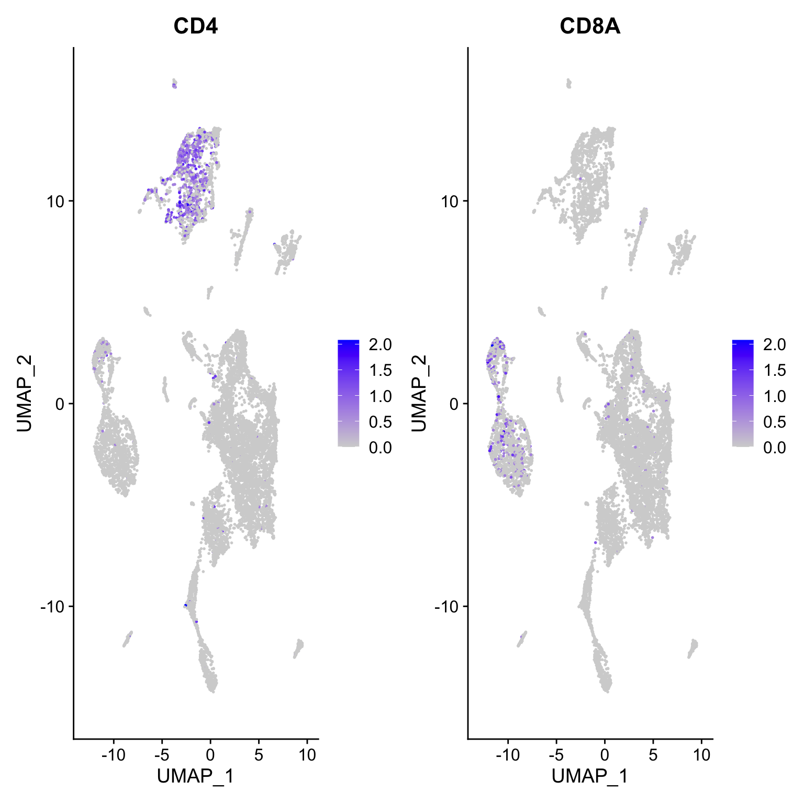
| Version | Author | Date |
|---|---|---|
| 18ac628 | Calandra Grima | 2026-08-04 |
DefaultAssay(seu_int.sub2) <- "RNA"
FeaturePlot(seu_int.sub2, features = c("CD4","CD8A", "CD69", "TOP2A"), reduction = "umap",
slot = "count")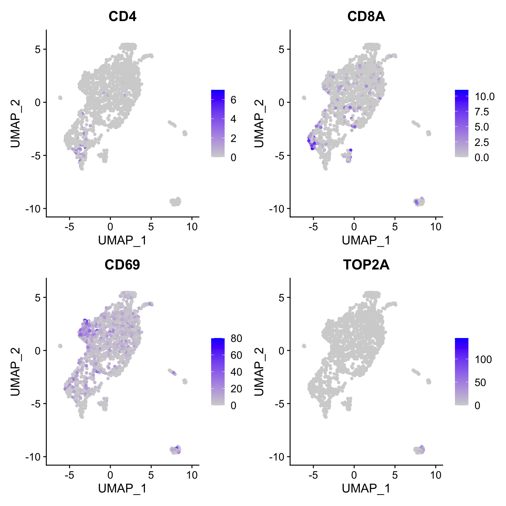
| Version | Author | Date |
|---|---|---|
| 18ac628 | Calandra Grima | 2026-08-04 |
marker_genes <- list(
"0" = c("IL23R","ITGAE","KIT"),
"1" = c("ZBTB16","IKZF2","RORA"),
"2" = c("IL7R","CCR6","ITGAE","IL23R","KLRB1"),
"3" = c("TMSB4X","EEF1A1","ACTB","ACTG1","RACK1","FAU","UBA52","COX7C","PFN1"),
"4" = c("LEF1","SATB1","IL32"),
"5" = c("LEF1","TCF7","CD27","CD8B","MAL"),
"6" = c("FOS","FOSB","JUN","JUND","CD69","DUSP1"),
"7" = c("RORA","CCR6","KIT","CD44"),
"8" = character(0),
"9" = c("MKI67","TOP2A","CDK1","TYMS","RRM2","BUB1B","TPX2","STMN1","NUSAP1","PCLAF"),
"10" = c("GNLY","NKG7","GZMA","GZMK","KLRD1","KLRC1","KLRC2","KLRC4","TYROBP","CCL3","CCL4","CCL5"),
"11" = c("LAMP3","IDO1","IDO2","FLT3","CSF2RA")
)
cluster_names.full <- c(
"0" = "Th17-like / ILC3 (IL23R+ITGAE+KIT)",
"1" = "Innate-like T / ILC / Treg-associated (ZBTB16+IKZF2+RORA)",
"2" = "Th17 / mucosal-associated T cells (CCR6+IL23R+KLRB1)",
"3" = "Low-quality / housekeeping (ribosomal-cytoskeletal)",
"4" = "Naive/early T cells (LEF1+SATB1)",
"5" = "Naive/stem-like CD8 T cells (TCF7+LEF1+CD27+CD8B)",
"6" = "Activated T cells (AP-1/immediate-early: FOS/JUN/CD69)",
"7" = "Th17 / ILC3 (RORA+CCR6+KIT)",
"8" = "Unclear / unannotated",
"9" = "Proliferating cells (MKI67+TOP2A+CDK1)",
"10" = "NK cells / cytotoxic lymphocytes (GNLY+NKG7+GZMA/K)",
"11" = "Mature/regulatory dendritic cells - mregDC (LAMP3+IDO1)"
)
cluster_names <- c(
"0" = "Th17-like / ILC3",
"1" = "Innate-like T / ILC / Treg-associated",
"2" = "Th17 / mucosal-associated T cells",
"3" = "Low-quality / housekeeping",
"4" = "Naive/early T cells",
"5" = "Naive/stem-like CD8 T cells",
"6" = "Activated T cells",
"7" = "Th17 / ILC3",
"8" = "Unknown",
"9" = "Proliferating cells",
"10" = "NK cells / cytotoxic lymphocytes",
"11" = "Dendritic cells"
)
seu_int.sub2$cluster_names.sub <- unname(unlist(cluster_names)[seu_int.sub2$seurat_clusters])
seu_int.sub2$cluster_names.sub <- factor(seu_int.sub2$cluster_names.sub,
levels = rev(unname(unlist(cluster_names))))
SUBSET_CLUSTER_COLOURS.NAMES <- SUBSET_CLUSTER_COLOURS
names(SUBSET_CLUSTER_COLOURS.NAMES) <- levels(seu_int.sub2$cluster_names.sub)
subcluster_markers_top20.named <- subcluster_markers_top20
names(subcluster_markers_top20.named) <- cluster_names[names(subcluster_markers_top20)]
write.csv(subcluster_markers_top20.named,
file = here("data", "workflow", "AmnioSC.cluster02_subset_subcluster_markers_top20.named.csv"),
quote = FALSE)
subcluster_go.named <- subcluster_go
cluster_names.X <- cluster_names
names(cluster_names.X) <- paste0("X", names(cluster_names))
names(subcluster_go.named) <- cluster_names.X[names(subcluster_go)]
subcluster_go.named Th17-like / ILC3
1 regulation of natural killer cell activation
2 natural killer cell activation
3 mucosa-associated lymphoid tissue development
4 Peyer's patch development
5 regulation of natural killer cell proliferation
6 regulation of synaptic vesicle cycle
7 dendritic cell cytokine production
8 regulation of dendritic cell cytokine production
9 natural killer cell proliferation
10 ectopic germ cell programmed cell death
Innate-like T / ILC / Treg-associated
1 alpha-beta T cell differentiation
2 CD8-positive, alpha-beta T cell differentiation
3 CD8-positive, alpha-beta T cell lineage commitment
4 positive T cell selection
5 T cell selection
6 CD8-positive, alpha-beta T cell activation
7 T cell differentiation in thymus
8 alpha-beta T cell lineage commitment
9 CD4-positive or CD8-positive, alpha-beta T cell lineage commitment
10 regulation of T cell differentiation
Th17 / mucosal-associated T cells
1 T cell differentiation in thymus
2 positive T cell selection
3 T cell selection
4 regulation of lymphocyte apoptotic process
5 melanocyte differentiation
6 negative regulation of T cell apoptotic process
7 lymphocyte apoptotic process
8 regulation of leukocyte apoptotic process
9 pigment cell differentiation
10 negative regulation of lymphocyte apoptotic process
Low-quality / housekeeping
1 negative regulation of protein localization to endoplasmic reticulum
2 purine ribonucleoside triphosphate biosynthetic process
3 purine nucleoside triphosphate biosynthetic process
4 ribonucleoside triphosphate biosynthetic process
5 response to type II interferon
6 nucleoside triphosphate biosynthetic process
7 oxidative phosphorylation
8 regulation of transepithelial transport
9 purine ribonucleotide biosynthetic process
10 negative regulation of cytoskeleton organization
Naive/early T cells
1 protein localization to axon
2 alpha-beta T cell differentiation
3 positive regulation of homotypic cell-cell adhesion
4 T-helper cell differentiation
5 CD4-positive, alpha-beta T cell differentiation involved in immune response
6 alpha-beta T cell activation involved in immune response
7 alpha-beta T cell differentiation involved in immune response
8 ectoderm development
9 T cell differentiation involved in immune response
10 gamma-delta T cell activation
Naive/stem-like CD8 T cells
1 gamma-delta T cell activation
2 T cell receptor signaling pathway
3 protection from natural killer cell mediated cytotoxicity
4 regulation of natural killer cell mediated cytotoxicity
5 regulation of gamma-delta T cell differentiation
6 regulation of natural killer cell mediated immunity
7 regulation of lymphocyte apoptotic process
8 regulation of gamma-delta T cell activation
9 antigen processing and presentation of endogenous peptide antigen via MHC class I via ER pathway, TAP-independent
10 positive regulation of leukocyte mediated cytotoxicity
Activated T cells
1 response to calcium ion
2 integrated stress response signaling
3 cellular response to calcium ion
4 cellular response to epidermal growth factor stimulus
5 response to glucocorticoid
6 response to epidermal growth factor
7 response to corticosteroid
8 response to corticosterone
9 cellular response to metal ion
10 response to forskolin
Th17 / ILC3
1 response to organophosphorus
2 response to purine-containing compound
3 response to cAMP
4 circadian regulation of gene expression
5 peptidyl-serine dephosphorylation
6 negative regulation of nucleotide-binding domain, leucine rich repeat containing receptor signaling pathway
7 negative regulation of nucleotide-binding oligomerization domain containing 2 signaling pathway
8 positive regulation of osteoclast differentiation
9 negative regulation of p38MAPK cascade
10 negative regulation of dendrite morphogenesis
Unknown
1 myotube differentiation
2 myoblast fusion
3 germ cell migration
4 syncytium formation by plasma membrane fusion
5 cell-cell fusion
6 syncytium formation
7 neutrophil extravasation
8 cellular extravasation
9 detection of mechanical stimulus involved in sensory perception of sound
10 positive regulation of cytokine production involved in immune response
Proliferating cells
1 mitotic sister chromatid segregation
2 cell cycle checkpoint signaling
3 regulation of nuclear division
4 regulation of chromosome separation
5 regulation of mitotic nuclear division
6 chromosome separation
7 regulation of chromosome segregation
8 mitotic cell cycle checkpoint signaling
9 negative regulation of mitotic cell cycle phase transition
10 microtubule cytoskeleton organization involved in mitosis
NK cells / cytotoxic lymphocytes
1 stimulatory C-type lectin receptor signaling pathway
2 response to lectin
3 cellular response to lectin
4 natural killer cell mediated immunity
5 leukocyte mediated cytotoxicity
6 natural killer cell activation
7 innate immune response activating cell surface receptor signaling pathway
8 regulation of cell killing
9 positive regulation of cell killing
10 natural killer cell mediated cytotoxicity
Dendritic cells
1 L-tryptophan catabolic process to kynurenine
2 interleukin-10 production
3 regulation of interleukin-10 production
4 L-tryptophan catabolic process
5 indole-containing compound catabolic process
6 kynurenine metabolic process
7 'de novo' NAD+ biosynthetic process from L-tryptophan
8 L-tryptophan metabolic process
9 erythrose 4-phosphate/phosphoenolpyruvate family amino acid catabolic process
10 benzene-containing compound metabolic processwrite.table(subcluster_go.named, sep = "\t", row.names = FALSE,
file = here("data", "workflow", "AmnioSC.cluster02_subset_subcluster_go_top10.named.tsv"),
quote = FALSE)DotPlot(object = seu_int.sub2, features = unique(unlist(marker_genes)),
group.by = "cluster_names.sub", assay = "SCT") +
theme_bw() + rotate_x_labels +
ggtitle("Expression of canonical literature marker genes - Subclustering analysis") -> p1
ggsave(filename = here("output", "collab_figures", "AmnioSC.subclustering.dot_plot.canonical.png"), plot = p1,
height = 6, width = 24)
DotPlot(object = seu_int.sub2, features = unique(unlist(subcluster_markers_top10)),
group.by = "cluster_names.sub", assay = "SCT") +
theme_bw() + rotate_x_labels +
ggtitle("Expression of subcluster marker genes - top 10 per cluster - Subclustering analysis") -> p1
p1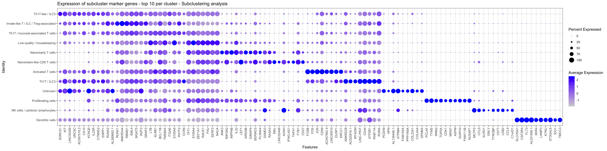
| Version | Author | Date |
|---|---|---|
| 18ac628 | Calandra Grima | 2026-08-04 |
ggsave(filename = here("output", "collab_figures", "AmnioSC.subclustering.dot_plot.top10.png"), plot = p1,
height = 6, width = 24)
DotPlot(object = seu_int.sub2, features = unique(unlist(subcluster_markers_top20)),
group.by = "cluster_names.sub", assay = "SCT") +
theme_bw() + rotate_x_labels +
ggtitle("Expression of subcluster marker - top 20 per cluster - Subclustering analysis") -> p1
p1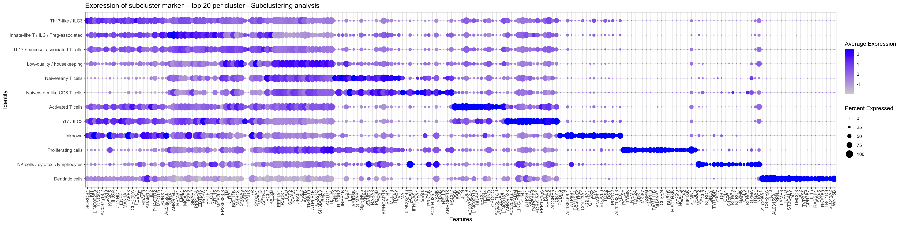
| Version | Author | Date |
|---|---|---|
| 18ac628 | Calandra Grima | 2026-08-04 |
ggsave(filename = here("output", "collab_figures", "AmnioSC.subclustering.dot_plot.top20.png"), plot = p1,
height = 6, width = 40)DimPlot(seu_int.sub2, reduction = 'umap', label = FALSE, label.size = 5,
group.by = "cluster_names.sub") +
scale_colour_manual(values = SUBSET_CLUSTER_COLOURS.NAMES) +
bottom_legend +
guides(color = guide_legend(ncol = 3, override.aes = list(size = 2))) +
ggtitle("Subclusters") -> p1
p1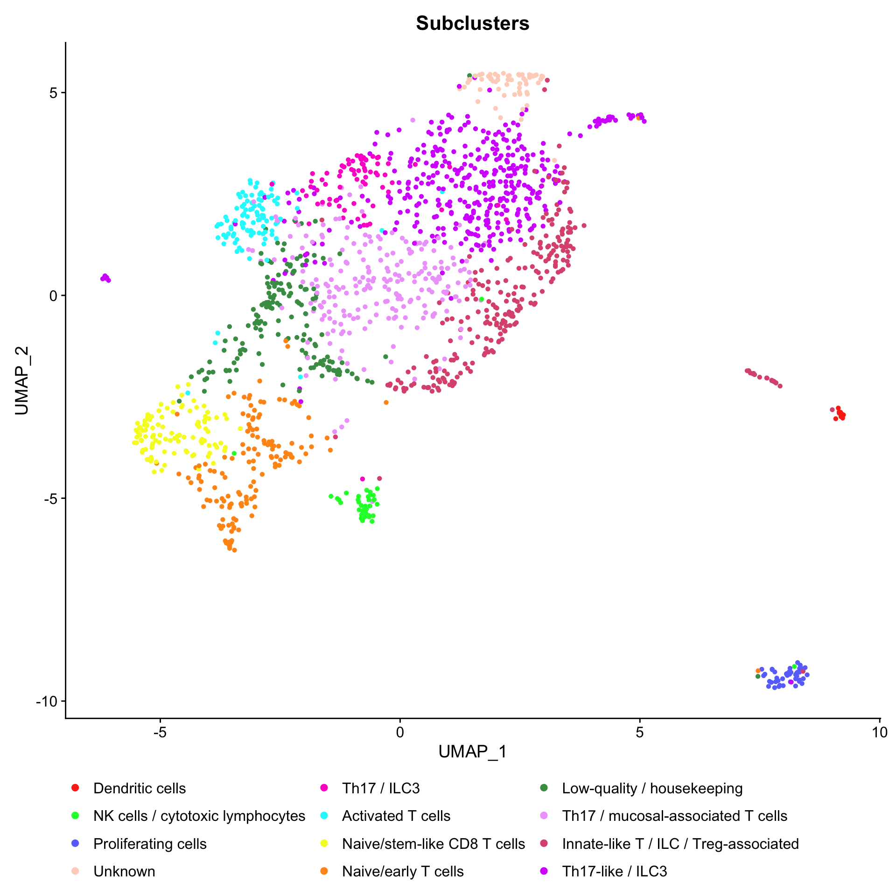
| Version | Author | Date |
|---|---|---|
| 18ac628 | Calandra Grima | 2026-08-04 |
ggsave(filename = here("output", "collab_figures", "AmnioSC.subclustering.UMAP.subclusters.png"), plot = p1,
height = 10, width = 10)# map the sub78 (subset & recomputed) subclusters back onto the full dataset, leaving every
# other cell labelled by its refined cluster so it can be greyed out below
seu_int.AmnioSC$sub2_cluster.names <- "None"
seu_int.AmnioSC$sub2_cluster.names[colnames(seu_int.sub2)] <- as.character(seu_int.sub2$cluster_names.sub)
seu_int.AmnioSC$sub2_cluster.names <- factor(seu_int.AmnioSC$sub2_cluster.names)# colour only the sub78 subclusters brightly, grey out everything else
SUB2_NAMES_COLOURS <- light.colors(n = 13)
SUB2_NAMES_COLOURS[8] <- "grey"
names(SUB2_NAMES_COLOURS) <- levels(seu_int.AmnioSC$sub2_cluster.names)DimPlot(seu_int.AmnioSC, reduction = 'umap', label = FALSE, label.size = 5,
group.by = "sub2_cluster.names") +
scale_colour_manual(values = SUB2_NAMES_COLOURS) +
guides(color = guide_legend(ncol = 2, override.aes = list(size = 2))) +
bottom_legend +
ggtitle("Subclusters in entire dataset UMAP") -> p1
p1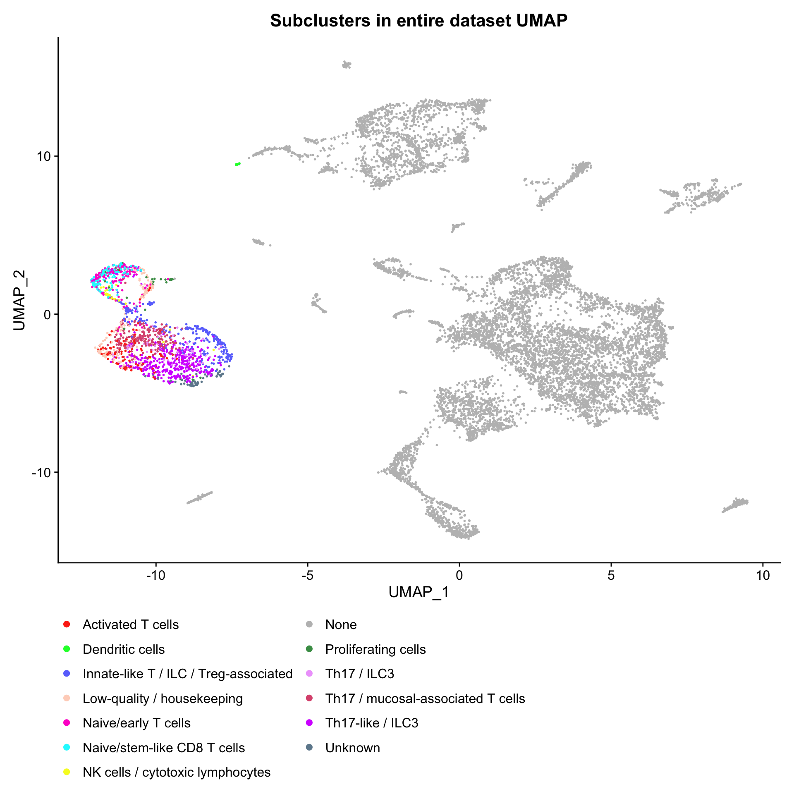
| Version | Author | Date |
|---|---|---|
| 18ac628 | Calandra Grima | 2026-08-04 |
ggsave(filename = here("output", "collab_figures", "AmnioSC.subclustering.UMAP.entire_dataset.png"), plot = p1,
height = 10, width = 10)Most of the clusters are just the same cell type but overclustered, so we shall just grab the distinct ones and use the original cluster names for the rest.
seu_int.AmnioSC$sub2_cluster <- NULL
seu_int.AmnioSC$sub2_cluster.names <- NULLseu_int.sub2$final_clusters <- as.character(seu_int.AmnioSC$seurat_clusters[colnames(seu_int.sub2)])
seu_int.sub2$final_clusters <- ifelse(seu_int.sub2$seurat_clusters %in% 9:11,
as.character(seu_int.sub2$cluster_names.sub),
seu_int.sub2$final_clusters)
table(seu_int.sub2$final_clusters)
2_0 2_1
578 449
2_2 2_3
257 168
2_4 Dendritic cells
70 14
NK cells / cytotoxic lymphocytes Proliferating cells
42 44 seu_int.AmnioSC$seurat_clusters <- as.character(seu_int.AmnioSC$seurat_clusters)
seu_int.AmnioSC$seurat_clusters[colnames(seu_int.sub2)] <- seu_int.sub2$final_clusters
table(seu_int.AmnioSC$seurat_clusters)
0_0 0_1
1292 1089
0_2 0_3
823 681
0_4 0_5
671 609
0_6 0_7
511 485
0_8 1_0
53 366
1_1 1_2
355 347
1_3 1_4
286 272
1_5 1_6
228 166
1_7 1_8
85 61
1_9 2_0
40 578
2_1 2_2
449 257
2_3 2_4
168 70
3_0 3_1
311 302
3_2 3_3
125 113
4 5
358 103
6 Dendritic cells
60 14
NK cells / cytotoxic lymphocytes Proliferating cells
42 44 saveRDS(seu_int.AmnioSC, here("data", "workflow",
"AmnioSC_ALL_optimised_ref.Integrated_clustered.Subclustered.Seurat.rds"))sessioninfo::session_info()─ Session info ───────────────────────────────────────────────────────────────
setting value
version R version 4.5.0 (2025-04-11)
os macOS 26.6
system aarch64, darwin20
ui X11
language (EN)
collate en_US.UTF-8
ctype en_US.UTF-8
tz Australia/Melbourne
date 2026-08-05
pandoc 3.8.3 @ /Applications/RStudio.app/Contents/Resources/app/quarto/bin/tools/aarch64/ (via rmarkdown)
quarto 1.9.38 @ /Applications/RStudio.app/Contents/Resources/app/quarto/bin/quarto
─ Packages ───────────────────────────────────────────────────────────────────
! package * version date (UTC) lib source
P abind 1.4-8 2024-09-12 [?] RSPM
P AnnotationDbi * 1.72.0 2025-10-29 [?] Bioconduc~
backports 1.5.0 2024-05-23 [1] RSPM (R 4.5.0)
P beachmat 2.26.0 2025-10-29 [?] Bioconduc~
P beeswarm 0.4.0 2021-06-01 [?] RSPM
P Biobase * 2.70.0 2025-10-29 [?] Bioconduc~
P BiocGenerics * 0.56.0 2025-10-29 [?] Bioconduc~
P BiocManager 1.30.27 2025-11-14 [?] RSPM
P BiocNeighbors 2.4.0 2025-10-29 [?] Bioconduc~
P BiocParallel 1.44.0 2025-10-29 [?] Bioconduc~
P BiocSingular 1.26.1 2025-11-17 [?] Bioconduc~
P Biostrings 2.78.0 2025-10-29 [?] Bioconduc~
P bit 4.6.0 2025-03-06 [?] RSPM
P bit64 4.6.0-1 2025-01-16 [?] RSPM
P blob 1.3.0 2026-01-14 [?] RSPM
P bluster 1.20.0 2025-10-29 [?] Bioconduc~
P bslib 0.10.0 2026-01-26 [?] RSPM
P cachem 1.1.0 2024-05-16 [?] RSPM
P callr 3.7.6 2024-03-25 [?] CRAN (R 4.5.0)
P checkmate 2.3.3 2025-08-18 [?] RSPM
P cli 3.6.6 2026-04-09 [?] RSPM
P cluster 2.1.8.1 2025-03-12 [?] CRAN (R 4.5.0)
P clustree * 0.5.1 2023-11-05 [?] RSPM
P codetools 0.2-20 2024-03-31 [?] CRAN (R 4.5.0)
colorspace 2.1-2 2025-09-22 [1] RSPM (R 4.5.0)
P cowplot * 1.2.0 2025-07-07 [?] RSPM
P crayon 1.5.3 2024-06-20 [?] RSPM
P data.table 1.18.2.1 2026-01-27 [?] RSPM
P DBI 1.2.3 2024-06-02 [?] RSPM
DelayedArray 0.36.1 2026-03-31 [1] https://bioc-release.r-universe.dev (R 4.5.3)
P DelayedMatrixStats 1.32.0 2025-10-29 [?] Bioconduc~
P deldir 2.0-4 2024-02-28 [?] RSPM
P digest 0.6.39 2025-11-19 [?] RSPM
dplyr * 1.2.0 2026-02-03 [1] RSPM (R 4.5.0)
P dqrng 0.4.1 2024-05-28 [?] CRAN (R 4.5.0)
P edgeR * 4.8.2 2025-12-23 [?] https://bioc-release.r-universe.dev (R 4.5.2)
P egg * 0.4.5 2019-07-13 [?] RSPM
P evaluate 1.0.5 2025-08-27 [?] RSPM
P farver 2.1.2 2024-05-13 [?] RSPM
P fastmap 1.2.0 2024-05-15 [?] RSPM
P fitdistrplus 1.2-6 2026-01-24 [?] RSPM
P forcats * 1.0.1 2025-09-25 [?] RSPM
P fs 2.1.0 2026-04-18 [?] RSPM
P future * 1.69.0 2026-01-16 [?] RSPM
P future.apply 1.20.1 2025-12-09 [?] RSPM
P generics * 0.1.4 2025-05-09 [?] CRAN (R 4.5.0)
P GenomicRanges * 1.62.1 2025-12-08 [?] Bioconduc~
P getPass 0.2-4 2023-12-10 [?] CRAN (R 4.5.0)
P ggalluvial * 0.12.5 2023-02-22 [?] RSPM
P ggbeeswarm * 0.7.3 2025-11-29 [?] RSPM
P ggforce 0.5.0 2025-06-18 [?] RSPM
P ggplot2 * 4.0.2 2026-02-03 [?] RSPM
P ggraph * 2.2.2 2025-08-24 [?] RSPM
P ggrepel 0.9.6 2024-09-07 [?] CRAN (R 4.5.0)
P ggridges 0.5.7 2025-08-27 [?] RSPM
P git2r 0.36.2 2025-03-29 [?] CRAN (R 4.5.0)
glmGamPoi 1.22.0 2025-10-29 [1] Bioconductor 3.22 (R 4.5.1)
P globals 0.19.0 2026-02-02 [?] RSPM
P glue 1.8.0 2024-09-30 [?] RSPM
P GO.db * 3.22.0 2026-02-03 [?] Bioconductor
P goftest 1.2-3 2021-10-07 [?] CRAN (R 4.5.0)
P graphlayouts 1.2.2 2025-01-23 [?] RSPM
P gridExtra * 2.3 2017-09-09 [?] RSPM
P gtable 0.3.6 2024-10-25 [?] RSPM
P here * 1.0.2 2025-09-15 [?] RSPM
P hms 1.1.4 2025-10-17 [?] RSPM
P htmltools 0.5.9 2025-12-04 [?] RSPM
P htmlwidgets 1.6.4 2023-12-06 [?] RSPM
P httpuv 1.6.16 2025-04-16 [?] CRAN (R 4.5.0)
P httr 1.4.7 2023-08-15 [?] RSPM
P ica 1.0-3 2022-07-08 [?] CRAN (R 4.5.0)
P igraph 2.2.1 2025-10-27 [?] RSPM
P IRanges * 2.44.0 2025-10-29 [?] Bioconduc~
P irlba 2.3.7 2026-01-30 [?] RSPM
P jquerylib 0.1.4 2021-04-26 [?] RSPM
P jsonlite 2.0.0 2025-03-27 [?] RSPM
P KEGGREST 1.50.0 2025-10-29 [?] Bioconduc~
P KernSmooth 2.23-26 2025-01-01 [?] CRAN (R 4.5.0)
P knitr 1.51 2025-12-20 [?] RSPM
P labeling 0.4.3 2023-08-29 [?] RSPM
P later 1.4.5 2026-01-08 [?] RSPM
P lattice 0.22-7 2025-04-02 [?] RSPM
P lazyeval 0.2.2 2019-03-15 [?] RSPM
leiden 0.4.3.1 2023-11-17 [1] RSPM (R 4.5.0)
P lifecycle 1.0.5 2026-01-08 [?] RSPM
P limma * 3.66.0 2025-10-29 [?] Bioconduc~
P listenv 0.10.0 2025-11-02 [?] RSPM
P lmtest 0.9-40 2022-03-21 [?] CRAN (R 4.5.0)
P locfit 1.5-9.12 2025-03-05 [?] RSPM
P lubridate * 1.9.4 2024-12-08 [?] RSPM
P magrittr 2.0.4 2025-09-12 [?] RSPM
P MASS 7.3-65 2025-02-28 [?] CRAN (R 4.5.0)
P Matrix 1.7-4 2025-08-28 [?] RSPM
P MatrixGenerics * 1.22.0 2025-10-29 [?] Bioconduc~
P matrixStats * 1.5.0 2025-01-07 [?] RSPM
P memoise 2.0.1 2021-11-26 [?] RSPM
P metapod 1.18.0 2025-10-29 [?] Bioconduc~
P mime 0.13 2025-03-17 [?] RSPM
P miniUI 0.1.2 2025-04-17 [?] CRAN (R 4.5.0)
P nlme 3.1-168 2025-03-31 [?] CRAN (R 4.5.0)
P org.Hs.eg.db * 3.22.0 2026-02-03 [?] Bioconductor
P otel 0.2.0 2025-08-29 [?] RSPM
P parallelly 1.46.1 2026-01-08 [?] RSPM
P patchwork * 1.3.2 2025-08-25 [?] RSPM
P pbapply 1.7-4 2025-07-20 [?] RSPM
P pheatmap * 1.0.13 2025-06-05 [?] RSPM
P pillar 1.11.1 2025-09-17 [?] RSPM
P pkgconfig 2.0.3 2019-09-22 [?] RSPM
P plotly 4.12.0 2026-01-24 [?] RSPM
P plyr 1.8.9 2023-10-02 [?] RSPM
P png 0.1-8 2022-11-29 [?] RSPM
P Polychrome * 1.5.4 2025-04-06 [?] RSPM
P polyclip 1.10-7 2024-07-23 [?] CRAN (R 4.5.0)
P processx 3.8.6 2025-02-21 [?] CRAN (R 4.5.0)
P progressr 0.18.0 2025-11-06 [?] RSPM
P promises 1.5.0 2025-11-01 [?] RSPM
P ps 1.9.1 2025-04-12 [?] CRAN (R 4.5.0)
P purrr * 1.2.1 2026-01-09 [?] RSPM
P R6 2.6.1 2025-02-15 [?] RSPM
P ragg 1.5.0 2025-09-02 [?] RSPM
P RANN 2.6.2 2024-08-25 [?] CRAN (R 4.5.0)
P RColorBrewer 1.1-3 2022-04-03 [?] RSPM
P Rcpp 1.1.1 2026-01-10 [?] RSPM
P RcppAnnoy 0.0.23 2026-01-12 [?] RSPM
P readr * 2.1.6 2025-11-14 [?] RSPM
P renv 1.1.7 2026-01-27 [?] RSPM
P reshape2 * 1.4.5 2025-11-12 [?] RSPM
P reticulate 1.44.1 2025-11-14 [?] RSPM
P rlang 1.2.0 2026-04-06 [?] RSPM
P rmarkdown * 2.30 2025-09-28 [?] RSPM
P ROCR 1.0-12 2026-01-23 [?] RSPM
P rprojroot 2.1.1 2025-08-26 [?] RSPM
P RSpectra 0.16-2 2024-07-18 [?] CRAN (R 4.5.0)
P RSQLite 2.4.5 2025-11-30 [?] RSPM
P rstudioapi 0.18.0 2026-01-16 [?] RSPM
P rsvd 1.0.5 2021-04-16 [?] RSPM
P Rtsne 0.17 2023-12-07 [?] CRAN (R 4.5.0)
P S4Arrays 1.10.1 2025-12-08 [?] Bioconduc~
S4Vectors * 0.48.1 2026-04-04 [1] https://bioc-release.r-universe.dev (R 4.5.3)
P S7 0.2.1 2025-11-14 [?] RSPM
P sass 0.4.10 2025-04-11 [?] RSPM
P ScaledMatrix 1.18.0 2025-10-29 [?] Bioconduc~
P scales 1.4.0 2025-04-24 [?] RSPM
P scater * 1.38.0 2025-10-29 [?] Bioconduc~
P scattermore 1.2 2023-06-12 [?] CRAN (R 4.5.0)
P scatterplot3d 0.3-44 2023-05-05 [?] RSPM
P scran * 1.38.0 2025-10-29 [?] Bioconduc~
P sctransform 0.4.3 2026-01-10 [?] RSPM
P scuttle * 1.20.0 2025-10-29 [?] Bioconduc~
P Seqinfo * 1.0.0 2025-10-29 [?] Bioconduc~
P sessioninfo * 1.2.3 2025-02-05 [?] RSPM
Seurat * 4.4.0 2024-01-10 [1] https://satijalab.r-universe.dev (R 4.5.0)
SeuratObject * 4.1.4 2023-09-27 [1] https://satijalab.r-universe.dev (R 4.5.0)
P shiny 1.12.1 2025-12-09 [?] RSPM
P SingleCellExperiment * 1.32.0 2025-10-29 [?] Bioconduc~
P sp 2.2-0 2025-02-01 [?] CRAN (R 4.5.0)
P SparseArray 1.10.8 2025-12-18 [?] Bioconduc~
P sparseMatrixStats 1.22.0 2025-10-29 [?] Bioconduc~
P spatstat.data 3.1-9 2025-10-18 [?] RSPM
P spatstat.explore 3.7-0 2026-01-22 [?] RSPM
P spatstat.geom 3.7-0 2026-01-20 [?] RSPM
P spatstat.random 3.4-4 2026-01-21 [?] RSPM
P spatstat.sparse 3.1-0 2024-06-21 [?] CRAN (R 4.5.0)
P spatstat.univar 3.1-6 2026-01-17 [?] RSPM
P spatstat.utils 3.2-1 2026-01-10 [?] RSPM
P statmod 1.5.1 2025-10-09 [?] RSPM
P stringi 1.8.7 2025-03-27 [?] RSPM
P stringr * 1.6.0 2025-11-04 [?] RSPM
P SummarizedExperiment * 1.40.0 2025-10-29 [?] Bioconduc~
P survival 3.8-6 2026-01-16 [?] RSPM
P systemfonts 1.3.1 2025-10-01 [?] RSPM
P tensor 1.5.1 2025-06-17 [?] RSPM
P textshaping 1.0.4 2025-10-10 [?] RSPM
P tibble * 3.3.1 2026-01-11 [?] RSPM
P tidygraph 1.3.1 2024-01-30 [?] RSPM
P tidyr * 1.3.2 2025-12-19 [?] RSPM
P tidyselect 1.2.1 2024-03-11 [?] RSPM
P tidyverse * 2.0.0 2023-02-22 [?] RSPM
P timechange 0.4.0 2026-01-29 [?] RSPM
P tweenr 2.0.3 2024-02-26 [?] RSPM
P tzdb 0.5.0 2025-03-15 [?] RSPM
P uwot 0.2.4 2025-11-10 [?] RSPM
P vctrs 0.7.1 2026-01-23 [?] RSPM
P vipor 0.4.7 2023-12-18 [?] RSPM
P viridis * 0.6.5 2024-01-29 [?] RSPM
P viridisLite * 0.4.2 2023-05-02 [?] RSPM
P whisker 0.4.1 2022-12-05 [?] CRAN (R 4.5.0)
P withr 3.0.2 2024-10-28 [?] RSPM
P workflowr * 1.7.2 2025-08-18 [?] RSPM
P xfun 0.56 2026-01-18 [?] RSPM
P xtable 1.8-4 2019-04-21 [?] RSPM
P XVector 0.50.0 2025-10-29 [?] Bioconduc~
P yaml 2.3.12 2025-12-10 [?] RSPM
P zoo 1.8-15 2025-12-15 [?] RSPM
[1] <project>/renv/library/macos/R-4.5/aarch64-apple-darwin20
[2] <renv-cache>/sandbox/macos/R-4.5/aarch64-apple-darwin20/4cd76b74
* ── Packages attached to the search path.
P ── Loaded and on-disk path mismatch.
──────────────────────────────────────────────────────────────────────────────
sessionInfo()R version 4.5.0 (2025-04-11)
Platform: aarch64-apple-darwin20
Running under: macOS 26.6
Matrix products: default
BLAS: /Library/Frameworks/R.framework/Versions/4.5-arm64/Resources/lib/libRblas.0.dylib
LAPACK: /Library/Frameworks/R.framework/Versions/4.5-arm64/Resources/lib/libRlapack.dylib; LAPACK version 3.12.1
locale:
[1] en_US.UTF-8/en_US.UTF-8/en_US.UTF-8/C/en_US.UTF-8/en_US.UTF-8
time zone: Australia/Melbourne
tzcode source: internal
attached base packages:
[1] stats4 stats graphics grDevices datasets utils methods
[8] base
other attached packages:
[1] future_1.69.0 scran_1.38.0
[3] reshape2_1.4.5 ggalluvial_0.12.5
[5] lubridate_1.9.4 forcats_1.0.1
[7] dplyr_1.2.0 purrr_1.2.1
[9] readr_2.1.6 tidyr_1.3.2
[11] tibble_3.3.1 tidyverse_2.0.0
[13] Polychrome_1.5.4 viridis_0.6.5
[15] viridisLite_0.4.2 sessioninfo_1.2.3
[17] here_1.0.2 egg_0.4.5
[19] gridExtra_2.3 patchwork_1.3.2
[21] cowplot_1.2.0 ggbeeswarm_0.7.3
[23] rmarkdown_2.30 pheatmap_1.0.13
[25] GO.db_3.22.0 org.Hs.eg.db_3.22.0
[27] AnnotationDbi_1.72.0 edgeR_4.8.2
[29] limma_3.66.0 stringr_1.6.0
[31] scater_1.38.0 scuttle_1.20.0
[33] SingleCellExperiment_1.32.0 SummarizedExperiment_1.40.0
[35] Biobase_2.70.0 GenomicRanges_1.62.1
[37] Seqinfo_1.0.0 IRanges_2.44.0
[39] S4Vectors_0.48.1 BiocGenerics_0.56.0
[41] generics_0.1.4 MatrixGenerics_1.22.0
[43] matrixStats_1.5.0 clustree_0.5.1
[45] ggraph_2.2.2 ggplot2_4.0.2
[47] SeuratObject_4.1.4 Seurat_4.4.0
[49] workflowr_1.7.2
loaded via a namespace (and not attached):
[1] fs_2.1.0 spatstat.sparse_3.1-0
[3] httr_1.4.7 RColorBrewer_1.1-3
[5] backports_1.5.0 tools_4.5.0
[7] sctransform_0.4.3 R6_2.6.1
[9] lazyeval_0.2.2 uwot_0.2.4
[11] withr_3.0.2 sp_2.2-0
[13] progressr_0.18.0 textshaping_1.0.4
[15] cli_3.6.6 spatstat.explore_3.7-0
[17] labeling_0.4.3 sass_0.4.10
[19] S7_0.2.1 spatstat.data_3.1-9
[21] ggridges_0.5.7 pbapply_1.7-4
[23] systemfonts_1.3.1 parallelly_1.46.1
[25] rstudioapi_0.18.0 RSQLite_2.4.5
[27] ica_1.0-3 spatstat.random_3.4-4
[29] Matrix_1.7-4 abind_1.4-8
[31] lifecycle_1.0.5 whisker_0.4.1
[33] scatterplot3d_0.3-44 yaml_2.3.12
[35] SparseArray_1.10.8 Rtsne_0.17
[37] glmGamPoi_1.22.0 grid_4.5.0
[39] blob_1.3.0 promises_1.5.0
[41] dqrng_0.4.1 crayon_1.5.3
[43] miniUI_0.1.2 lattice_0.22-7
[45] beachmat_2.26.0 KEGGREST_1.50.0
[47] pillar_1.11.1 knitr_1.51
[49] metapod_1.18.0 future.apply_1.20.1
[51] codetools_0.2-20 leiden_0.4.3.1
[53] glue_1.8.0 getPass_0.2-4
[55] spatstat.univar_3.1-6 data.table_1.18.2.1
[57] vctrs_0.7.1 png_0.1-8
[59] gtable_0.3.6 cachem_1.1.0
[61] xfun_0.56 S4Arrays_1.10.1
[63] mime_0.13 tidygraph_1.3.1
[65] survival_3.8-6 statmod_1.5.1
[67] bluster_1.20.0 fitdistrplus_1.2-6
[69] ROCR_1.0-12 nlme_3.1-168
[71] bit64_4.6.0-1 RcppAnnoy_0.0.23
[73] rprojroot_2.1.1 bslib_0.10.0
[75] irlba_2.3.7 vipor_0.4.7
[77] KernSmooth_2.23-26 otel_0.2.0
[79] colorspace_2.1-2 DBI_1.2.3
[81] tidyselect_1.2.1 processx_3.8.6
[83] bit_4.6.0 compiler_4.5.0
[85] git2r_0.36.2 BiocNeighbors_2.4.0
[87] DelayedArray_0.36.1 plotly_4.12.0
[89] checkmate_2.3.3 scales_1.4.0
[91] lmtest_0.9-40 callr_3.7.6
[93] digest_0.6.39 goftest_1.2-3
[95] spatstat.utils_3.2-1 XVector_0.50.0
[97] htmltools_0.5.9 pkgconfig_2.0.3
[99] sparseMatrixStats_1.22.0 fastmap_1.2.0
[101] rlang_1.2.0 htmlwidgets_1.6.4
[103] shiny_1.12.1 DelayedMatrixStats_1.32.0
[105] farver_2.1.2 jquerylib_0.1.4
[107] zoo_1.8-15 jsonlite_2.0.0
[109] BiocParallel_1.44.0 BiocSingular_1.26.1
[111] magrittr_2.0.4 Rcpp_1.1.1
[113] reticulate_1.44.1 stringi_1.8.7
[115] MASS_7.3-65 plyr_1.8.9
[117] parallel_4.5.0 listenv_0.10.0
[119] ggrepel_0.9.6 deldir_2.0-4
[121] Biostrings_2.78.0 graphlayouts_1.2.2
[123] splines_4.5.0 tensor_1.5.1
[125] hms_1.1.4 locfit_1.5-9.12
[127] ps_1.9.1 igraph_2.2.1
[129] spatstat.geom_3.7-0 ScaledMatrix_1.18.0
[131] evaluate_1.0.5 renv_1.1.7
[133] BiocManager_1.30.27 tzdb_0.5.0
[135] tweenr_2.0.3 httpuv_1.6.16
[137] RANN_2.6.2 polyclip_1.10-7
[139] scattermore_1.2 ggforce_0.5.0
[141] rsvd_1.0.5 xtable_1.8-4
[143] RSpectra_0.16-2 later_1.4.5
[145] ragg_1.5.0 memoise_2.0.1
[147] beeswarm_0.4.0 cluster_2.1.8.1
[149] timechange_0.4.0 globals_0.19.0